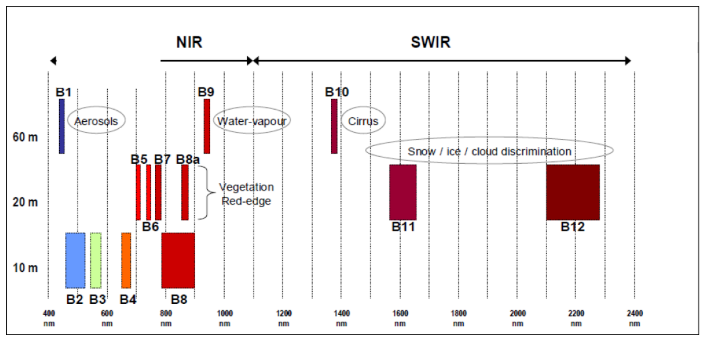
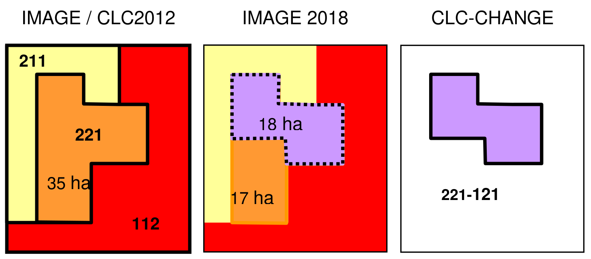
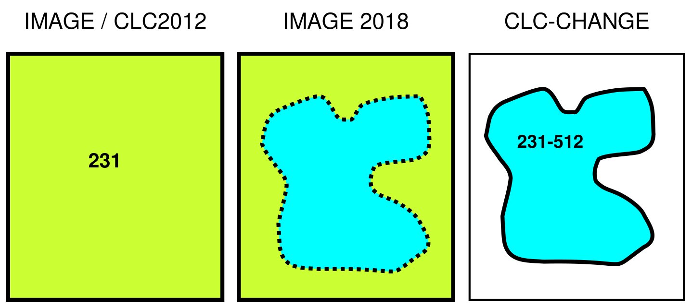
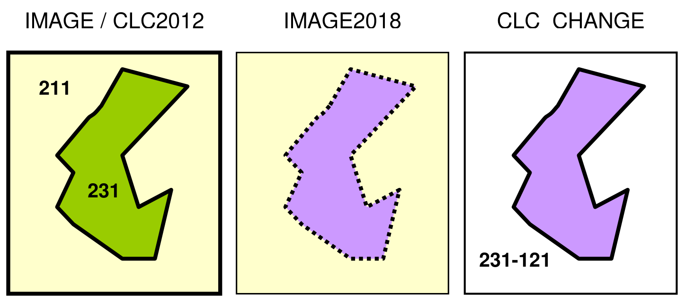
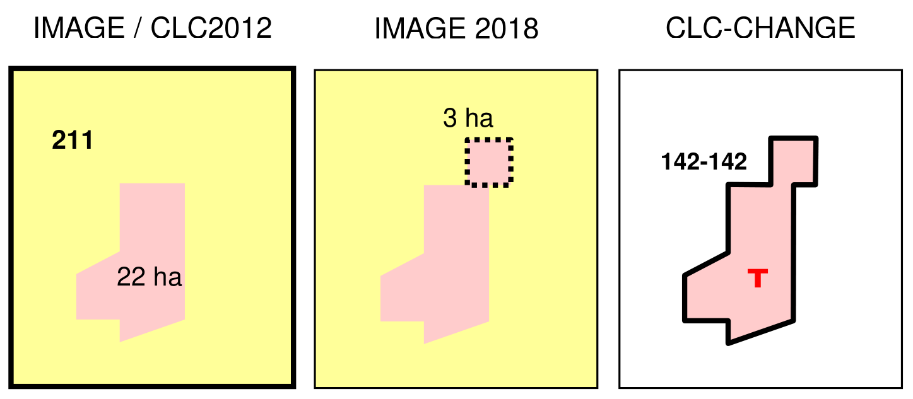

CLC2018 Technical Guidelines
Service Contract No 3436/R0-Copernicus/EEA.56665
CLC-Change~2012-2018~ mapping through computer-assisted photo-interpretation. The guidelines detail the integration of IMAGE2012 and IMAGE2018 satellite imagery, notably leveraging Sentinel-2 data, alongside input data requirements, quality control procedures, and data delivery specifications. This ensures harmonised, high-quality land cover information for environmental assessments across Europe.
CORINE Land Cover 2018 (CLC2018), Land cover change mapping, Sentinel-2 imagery, Computer-assisted photo-interpretation (CAPI), Minimum mapping unit (MMU), Thematic accuracy assessment, Data delivery procedures, Copernicus Land Monitoring Service (CLMS), Image data stack, Land cover classification nomenclature, Quality control and verification, Eionet National Reference Centres
Contact:
European Environment Agency (EEA)
Kongens Nytorv 6
1050 Copenhagen K
Denmark
https://land.copernicus.eu/
1 Introduction
1.1 About the document
The European Environment Agency (EEA) is a European Union public body whose role is to support the European Union in the development and implementation of environmental policy by providing relevant, reliable, targeted and timely information on the state of the environment and future prospects. The Commission has entrusted the EEA with budget implementation tasks in the Copernicus Earth Observation programme. Pursuant to Article 7.2 of the Delegation Agreement with the European Union, the EEA shall be responsible for the coordination of the technical implementation of the pan-European continental component and the local component of the Copernicus land monitoring service and the cross-cutting in situ component, as well as for the necessary dissemination activities. The key requirement to ensure availability of Copernicus land monitoring products in due time for assessments to be made in view of the SoER 2020 report, constitutes a major challenge in particular on the time line for the production of CORINE Land Cover 2018 (CLC2018).
These Technical Guidelines provide support for the update of CORINE land cover (CLC) data for the reference year 2018, similarly to its predecessors for CLC1990 [1], CLC2000 [2], CLC2006 [3] and CLC2012 [4]. According to the described standard methodology the CORINE Land Cover database for the year 2018 (CLC2018) will be derived by integrating the data of land cover changes between the years 2012–2018 (CLC-Change~2012-2018~) – as primary product - with the revised land cover map of year 2012 (revised CLC2012) - as side product. Alternative, semiautomatic methodologies – if provide comparable results with the standard methodology – are allowed and welcome, but not discussed in this document. The enhanced version of CLC nomenclature is discussed in a separate document [5]. Orthocorrected satellite imagery called IMAGE2012 (taken in 2011 and 2012) and IMAGE2018 (taken mainly in 2017) should be used in deriving CLC-Change~2012-2018~ and deriving CLC2018.
CLC2018 is traditionally implemented or managed by the Eionet National Reference Centres (NRCs) for land cover, where the best expertise as well as the ancillary data are available for mapping land cover changes. Verification of national products and integration of all national contributions will be provided by EEA, supported by the European Topic Centre on Urban, Land and Soil System (ETC-ULS).
The structure and content of this document is similar to the CLC2006 Technical Guidelines [3]. The first three chapters describe the background, organisation and main technical parameters of CLC2018 project within the Copernicus Pan-European Land Monitoring Programme. In this part, especially Chapter 3 (Satellite image basics) has changed significantly due the availability of ESA’s Sentinel-2 imagery, considered as breakthrough in European land monitoring. Chapter 4 provides guidelines for mapping CLC-Changes (focusing on the “change mapping first” photointerpretation technology, applied by most of the participants). Chapter 5 is about ancillary data. Chapter 6 describes the automated generation of CLC2018. Chapters 4-6 have changed only modestly. Chapter 7 describes metadata. Chapters 8 is about the training of national teams and the procedure of verification. Verification need to be reorganised in order to keep track with the tight schedule of the project, while not to lose the high quality of products. Chapter 9 replaced the former chapter about “Deliverables” and describes the guidelines for delivery of the products.
The intended readers of this document are the members of national CLC national teams and other organisations involved in the production. The primary aim is to provide guidance on practical issues of production, with a basic overview of the theoretical considerations.
1.2 Brief history of CORINE Land Cover
CLC2018 is the fifth CORINE Land Cover inventory (Table 1). Brief history of CLC is presented below.
1.2.1 CLC1990
From 1985 to 1990, the European Commission implemented the CORINE Programme (Co-ordination of Information on the Environment). During this period, an information system on the state of the European environment was created and nomenclatures and methodologies were developed and agreed at EU level. Images acquired by earth observation satellites are used as the main source data to derive land cover information [6]. Satellite images were visually interpreted by using plastic overlays on top of 1:100.000 scale hardcopies. The first CORINE Land Cover project (CLC1990) has been implemented in most of the (that time) EU countries, as well as in the 10 so called Phare partner countries in Central and Eastern Europe.
Table 1 CORINE Land Cover inventories in Europe
| Name | Start year | End year |
|---|---|---|
| CLC1990 | 1986 | 1999 |
| CLC2000 | 2001 | 2006 |
| CLC2006 | 2007 | 2010 |
| CLC2012 | 2013 | 2015 |
| CLC2018 | 2017 | 2018 (planned) |
1.2.2 CLC2000
Following the setting up of the European Environment Agency (EEA) and the establishment of the European Environment Information and Observation Network (Eionet), the responsibilities of the CORINE databases - including the updates - rely on the EEA.
As CLC1990 was completed and came to use, several users at national and European level expressed their need for an updated CLC database. Updating was implemented within the IMAGE&CLC2000 project, which consisted of two main components:
- IMAGE2000: covering activities related to satellite image acquisition, ortho-rectification and production of European and national mosaic, and
- CLC2000 covering activities related to updating of CLC1990 based on IMAGE2000 (updated version is named CLC2000) and detection and interpretation of land cover changes (named
CLC-Change~1990-2000~) by using CLC1990, IMAGE1990 and IMAGE2000. In order to prevent propagating errors into CLC2000 – the geometric and thematic mistakes in CLC1990 have been corrected [7].
Improving the geometry of CLC layer and mapping CORINE land cover changes constituted the main novelties of CLC2000. The technology of drawing the interpretation on transparencies was discarded and replaced by CAPI (computer-assisted photo-interpretation).
1.2.3 CLC2006 under GMES
In 2005–2006, strategic discussions amongst member countries, the European Parliament and the main EU institutions responsible for environmental policy, reporting and assessment (DG ENV, DG AGRI, EEA, ESTAT and JRC) have underlined an increasing need for factual and quantitative information on the state of the environment to be based on timely, quality assured data, in particular in land cover and land use related issues. Based on requirements of DG Environment, DG Agriculture and other users for the period 2006–2008, the EEA put forward a proposal to collaborate with the European Space Agency (ESA) and the European Commission (EC) on the implementation of a fast track service precursor (FTSP) on land monitoring. The definition and implementation of the necessary satellite data procurement and processing was undertaken by ESA and JRC. CLC2006 was one of the components of GMES FTSP Land Monitoring [8], [9].
From a technical point of view, the main novelty of CLC2006 was the introduction of harmonised change mapping rules [10]. All changes exceeding 5 ha in size had to be mapped, not only those that were associated to existing polygons. CAPI was the prevailing method applied in interpreting of satellite images. Nevertheless, FI, IS, NO, SE and the UK applied a semiautomatic methodology. Concerning satellite imagery, the single date Landsat TM, used in CLC2000 was replaced by two satellite images (taken by usually IRS and SPOT-4) acquired in two different seasons.
1.2.4 CLC2012 under Copernicus
The fourth CLC inventory (CLC2012) was implemented as part of the GMES Initial Operations (GIO) initiated by DG ENTR of the European Commission. The coordination of the GIO land monitoring was delegated to EEA for implementation [11]. With CLC2012 the CLC time series have become embedded in the Copernicus programme, thus ensuring sustainable funding for the future.
The ESA Data Warehouse [12] has provided a satellite image catalogue and download system for all GMES-related activities, including CLC2012. Two satellite image coverages have been acquired (primarily IRS/ResourceSat and RapidEye and less extent SPOT-4 and SPOT-5) in 2011-2012. Gap filling in 2013 was targeting those areas which were not covered by imagery during the 2-year image acquisition period. The technical implementation of CLC2012 was similar to the CLC2006 inventory [4]. Majority of countries applied Computer Assisted Photointerpretation (CAPI) technology to map the CLC-Change layer first. Germany and Ireland joined the Scandinavian countries and Spain by applying a semi-automatic methodology based on the integration of existing land use data, satellite image processing and generalization.
1.2.5 CLC2018 in the frames of Copernicus
CLC2018, the 5th CLC inventory will be a continuation of previous CORINE Land Cover inventories. The project is coordinated by the EEA. Main highlights are:
- Sentinel-2 satellite imagery – the 1st European satellite dedicated for land monitoring [16] - will be provided as basic image data support representing land cover in 2017-2018. For gap-filling Landsat-8 data will be used.
- Shorter production time (see Tables 1 and 2) compared to previous inventories to be harmonised with SOER 2020.
Computer assisted photointerpretation is still the dominating method used by the participating countries, but alternative solutions (bottom-up approach) are emerging.
1.3 Main technical parameters of CORINE Land Cover
The choice of minimum mapping unit (MMU = 25 hectares) and minimum width of linear elements (MMW = 100 metres) in CLC mapping represent a trade-off between cost and detail of land cover information [1]. These two basic parameters are the same for all the five CLC inventories.
The standard CLC nomenclature includes 44 land cover classes. These are grouped in a three-level hierarchy. The five main (level-one) categories are: 1) artificial surfaces, 2) agricultural areas, 3) forests and semi-natural areas, 4) wetlands, 5) water bodies [1]. All national teams had to adopt this standard nomenclature according to their landscape conditions. Although the 44 categories have not changed since the implementation of the first CLC inventory (1986-1998), the definition of most of the nomenclature elements was significantly improved [5].
Earth observation satellite imagery is the basis of CLC mapping, providing up-to-date information about the surface of the Earth in proper resolution. Raw satellite images first have to be pre-processed and enhanced to yield a geometrically correct document in national projection. In the CLC1990 inventory ortho-correction was usually not applied, and GCPs were mostly selected from 1:100.000 scale maps. Therefore, the geometric accuracy of IMAGE1990 products and that of the derived CLC1990 did not fulfil specification (Table 2). Started from the CLC2000 project satellite images are ortho-corrected by using DTM. The accuracy is characterised with an RMS error below 25 metres.
During the first CLC inventory the “traditional” photointerpretation method was used: an overlay was fixed on top of a satellite image hardcopy and the photo-interpreter drew polygons on it marking them with a CLC code. Later the overlay was digitised, topology was created and the CLC code entered. This procedure often resulted in several types of errors in geometry as well as in thematic content, which were mostly corrected later, within the frames of IMAGE&CLC2000.
In CLC2000 the method of drawing on transparencies was discarded, and the use of computer-assisted image interpretation (CAPI) was applied [2]. CAPI has become the main tool of producing all the subsequent CLC inventories, including CLC2018. The number of alternative solutions is growing slowly.
Main characteristics of subsequent CLC projects are summarised in Table 2.
1.4 CORINE Land Cover changes
CORINE Land Cover Changes (CLC-Changes) are mapped first in the 2nd CLC inventory, CLC2000. It was a policy requirement to map changes smaller than the 25 ha, MMU size of CLC. The MMU of the CLC-Changes database was set to 5 ha1. The 100-meter minimum width is also valid for the CLC-Changes polygons for practical reasons. Changes should refer to real evolution processes. Starting from CLC2006, mapping CLC-Changes has been standardised: all CLC-changes larger than 5 ha have to be mapped [10]. See more details in Ch. 4.
Table 2 Evolution of CORINE Land Cover
| CLC1990 | CLC2000 | CLC2006 | CLC2012 | CLC2018 | |
|---|---|---|---|---|---|
| Satellite data used dominantly | Landsat-4/5 TM single date (in a few cases Landsat MSS) | Landsat-7 ETM single date | SPOT-4 and / or IRS LISS III dual date | IRS, SPOT-4/5 and RapidEye | Sentinel-2 and Landsat-8 for gap filling |
| Time consistency | 1986-1998 | 2000 ± 1 year | 2006± 1 year | 2011-2012 | 2017-2018 |
| Geometric accuracy satellite images | ≤ 50 m | ≤ 25 m | ≤ 25 m | ≤ 25 m | ≤ 10 m (Sentinel-2) |
| CLC mapping MMU | 25 ha | 25 ha | 25 ha | 25 ha | 25 ha |
| CLC mapping minimum width | 100 m | 100 m | 100 m | 100 m | 100 m |
| Geometric accuracy CLC data | 100 m | better than 100 m | better than 100 m | better than 100 m | better than 100 m |
| Thematic accuracy | ≥ 85% (probably not achieved) | ≥ 85% (achieved [13] | ≥ 85% | ≥ 85% (probably achieved) | ≥ 85% |
| Change mapping | boundary displacement min. 100 m; change area for existing polygons ≥ 5 ha; isolated changes ≥ 25 ha | boundary displacement min. 100 m; all changes > 5 ha must be mapped | boundary displacement min. 100 m; all changes > 5 ha must be mapped | boundary displacement min. 100 m; all changes > 5 ha must be mapped | |
| Production time | 13 years | 5 years | 4 years | 3 years | 1,5 years |
| Documentat-ion | incomplete metadata | standard metadata | standard metadata | standard metadata | standard metadata |
| Access to the data | unclear dissemination policy | disseminat-ion policy agreed from the start | free access for all kind of users | free access for all kind of users | free access for all kind of users |
| Number of European countries involved² | 22 (28) | 32 (39) | 38 (39) | 39 | not yet known |
1.5 Preparing for CLC2018
1.5.1 Participating countries
At the time of writing of this Manual, the final list of participating countries is not yet available. In order to continue the CLC time series, all the EEA39 countries are encouraged to participate in CLC2018: 33 EEA member states and 6 collaborating countries (see Fig. 1. and Table 3) with total area of 5.85 Mkm².
Table 3 CLC2018 participation (status: October 2017)
| Country | Status | Country | Status |
|---|---|---|---|
| Albania | not eligible for Copernicus funding | Kosovo (under the UN Security Council Resolution 1244/99) | not eligible for Copernicus funding |
| Austria | ✓ | Latvia | will not submit offer |
| Belgium | ✓ | Liechtenstein | ✓ covered by Austria |
| Bosnia and Herzegovina | not eligible for Copernicus funding | Lithuania | ✓ |
| Bulgaria | ✓ | Luxemburg | will not submit offer |
| Croatia | ✓ | Malta | ✓ |
| Cyprus | no reply yet | Montenegro | not eligible for Copernicus funding |
| Czech Republic | ✓ | The Netherlands | ✓ |
| Denmark | will not submit offer | Norway | ✓ |
| Estonia | ✓ | Poland | ✓ |
| Finland | ✓ | Portugal | ✓ |
| Former Yugoslav Republic of Macedonia | not eligible for Copernicus funding | Romania | ✓ |
| France | ✓ | Serbia | not eligible for Copernicus funding |
| Germany | ✓ | Slovakia | ✓ |
| Greece | ✓ | Slovenia | ✓ |
| Hungary | ✓ | Spain | ✓ |
| Iceland | ✓ | Sweden | ✓ |
| Ireland | ✓ | Switzerland | not eligible for Copernicus funding |
| Italy | ✓ | Turkey | not eligible for Copernicus funding; will provide national funding |
| United Kingdom | ✓ |
Remarks: “No reply yet” means: countries have not sent back the proposal for a Framework Contract until the deadline “Not eligible for Copernicus funding” means: these countries might implement CLC2018 under a scheme different than Copernicus, similarly to CLC2012.
![This choropleth map illustrates the participation status of European countries and surrounding regions in the CORINE Land Cover (CLC) 2018 programme, based on data from October 2017. The map covers Europe, including Iceland, the United Kingdom, and parts of North Africa and the Middle East, with insets for the Canary Islands, Azores Islands, and Madeira Islands. A latitude/longitude grid is shown, ranging from 20°W to 60°E longitude and 30°N to 60°N latitude. A scale bar indicates distances up to 1500 km. The legend defines four categories: * **Green**: 'Participating country'. This includes most of Western, Central, and Northern Europe, such as Iceland, Ireland, the United Kingdom, France, Germany, Spain, Portugal, Italy, Austria, Belgium, Netherlands, Luxembourg, Czech Republic, Slovakia, Poland, Hungary, Slovenia, Croatia, Bulgaria, Romania, Greece, Finland, Sweden, Norway, and Estonia. Liechtenstein is covered by Austria. * **Blue**: 'Participation pending'. These are mainly countries in the Balkans (Albania, Bosnia and Herzegovina, Montenegro, Former Yugoslav Republic of Macedonia, Serbia), Switzerland, Cyprus, and Turkey. According to the context, Albania, Bosnia and Herzegovina, Montenegro, Former Yugoslav Republic of Macedonia, and Serbia are 'not eligible for Copernicus funding', while Switzerland and Turkey are 'not eligible for Copernicus funding' but Turkey will 'provide national funding'. Cyprus had 'no reply yet'. * **Red**: 'Not participating'. This includes Denmark, Latvia, and Malta (Luxembourg is not highlighted in red on the map but stated in the context as 'will not submit offer'). Denmark and Latvia are explicitly listed in the context as 'will not submit offer', while Malta is listed as '✓' in the context but red on the map. * **Grey**: 'Out of CLC coverage'. This applies to Russia, Belarus, Ukraine, and countries in North Africa and the Middle East, indicating they are outside the primary geographic scope of the CLC programme. The map shows widespread participation in Western and Central Europe, with areas of pending participation predominantly in Southern and Eastern Europe, and a few instances of non-participation in Northern Europe.](products_2018_Technical_Guidelines_v1-media/img-6b9fe11652f5588ae3846e4cecbc8e5a.png)
1.5.2 Technical documents
Technical documents supporting the implementation of CLC2018 are presented below.
Table 4 List of technical documents supporting the implementation of CLC2018
| Subject / Title | Status, reference |
|---|---|
| CLC2018 Technical guidelines | updated, this document |
| CORINE Land Cover nomenclature | updated, separate document and online version [5] |
| Manual of CORINE Land Cover changes | separate document, updated [23] |
| ArcGIS macro programme for generating CLC2018 | minor actualisation, separate document [26] |
| CLC QC Quick Guide - online / off-line manual | updated, separate document [27] |
| CLC2018 Support Package (software and user guide) | updated, separate document [31] |
| Step-by-step guidelines for IMAGE2018 selection | new, separate document [32] |
2 Components of CLC2018
2.1 Work packages
Like in the previous CLC inventories 7 work packages have been defined to implement CLC2018. Table 5 provides an overview of the role of contributing partners involved in the execution of each work package. The only novelty in Table 5 is WP 1.3, which is needed because of Sentinel-2 imagery (see more in Ch. 3.2.3)
Table 5 Work packages and the overview of the role of partners
| Tasks | NRC | EEA | ESA | Service provider |
|---|---|---|---|---|
| WP 1.1 Satellite data acquisition (Sentinel-2 and Landsat 8) | X | |||
| WP 1.2 Ortho-correction | X | |||
| WP 1.3 Technical preparation of IMAGE2018 (Sentinel-2 and Landsat-8 (gap-filling)image provision) | x | X | ||
| WP 2 In-situ and ancillary data collection | x | x | ||
| WP 3.1 Corine land cover change mapping 2012-2018 | X | x | ||
| WP 3.2 Generating CLC2018 | X | x | ||
| WP 4 Verification by Technical Team | x | x | ||
| WP 5 Validation | X | |||
| WP 6 CLC data dissemination | X | x | ||
| WP 7 Project management (NRCs) | X | x | x | x |
X = leading organisation x = organisation involved
This document describes in detail WP1.3, WP3 and WP4. Other WPs will be tackled only marginally.
2.2 Project organisation
Pursuant to Article 5 of Regulation (EC) No 401/2009 on the EEA and the Eionet, the EEA may agree with the institutions or bodies which form part of Eionet (i.e. the NRCs, NFPs and ETCs) upon the necessary arrangements, in particular contracts, for successfully carrying out the tasks which it may entrust to them. The Eionet members have already successfully cooperated with the EEA under the framework of the GMES/Copernicus Initial Operations (GIO land) 2011-2013 and other previous programmes and they enjoy thus a long standing experience and know-how in land monitoring related activities (in particular CLC production). The continued/renewed involvement of local experts will warrant the success of the project with access to local knowledge and ancillary data necessary to support the land cover change mapping. So far, the production of CLC (as well as other Copernicus tasks executed in cooperation with the NRCs) has be done on the basis of grant agreements concluded with the Eionet member countries. With the aim of streamlining and optimizing the performance process of the above-mentioned tasks in mind, this time service contracts are awarded instead. The service contracts are established within a framework contract between EEA and Eionet member countries, covering a 5 year period. Service contracts do not require co-financing from the MS, while they still meet the result ownership requirement. The absence of co-financing inherent to service contract is deemed to be a factor that can contribute to the establishment of an operational team within the NRCs which could then perform on a more permanent and coherent way the tasks envisaged to be entrusted in both the local and pan-European components and could lead therefore to a greater commitment towards the achievement of the set objectives through maintaining a continuous flow of work and avoiding peaks and loosing know-how. Framework service contracts to be implemented through specific contracts will cover the whole period of the operational implementation phase of the current Copernicus delegation agreement which runs until 31.12.2021. CLC2018 implementation (change mapping and CLC2012 revision) is therefore executed by national organizations nominated or selected in a tender by NRCs, or the NRCs themselves. EEA and ETC/ULS will provide administrative and technical support. Similarly to previous CLC inventories, the CLC Technical Team will provide training on CLC mapping, performs verifications, give helpdesk on CLC production methodology and the photointerpretation software, and carry out technical verification. Service Providers will be mainly involved in providing support in image coverage pre-selection, re-projection to national projections, and provision of the input data to the countries.
3 Satellite image basics for CLC2018
The purpose of this chapter is to provide an overview of the satellite imagery support dedicated for the CLC2018 project. To map CLC changes between 2012 and 2018 two sets of satellite images should be used: the ones used to derive CLC2012 (IMAGE2012) as well as the ones depicting the 2018 status (IMAGE2018). The characteristics of and access to these satellite images will be shortly described.
ESA has provided access to IMAGE2012 data through its Data Warehouse [12]. Sentinel-2 imagery - constituting the main IMAGE2018 data will be accessible from the European Space Agency’s (ESA) Copernicus Open Access Hub [14] or via a dedicated organisation set-up by EEA to provide support to countries in pre-processing of S2 imagery (see Ch. 3.2.3).
3.1 IMAGE2012
Normally, IMAGE2012 data are available for the participating national teams from their own satellite image archive. If this is not the case, access to IMAGE2012 is described briefly below.
For the period 2011-2013 the concept of Data Warehouse (DWH) has been developed by ESA. The new approach was based on the procurement of a set of common and pre-defined ‘core’ datasets acquired by the Copernicus Contributing Mission (CCM) and made broadly available to public organisations at European and national level. A data access portfolio [12] describes the datasets available. The agreement for data access intended to provide multiple right of use of the ortho-corrected satellite images in national projection, as long as traceability of use was ensured. National Teams were granted access to these data for internal use as soon as the DWH2 Licence have been signed.
3.1.1 High-resolution satellite images
Two coverages of pan-European multi-temporal ortho-rectified satellite imagery covering all 39 participating countries with 12 nautical miles’ sea buffer was provided by ESA for the period of 2011-2012, with all spectral bands and cloud masking. This set of imagery is called IMAGE2012. The raw images were projected into national projection system. These images were the main satellite data input for producing the core land cover data (CLC2012 and high-resolution layers). Two dates of acquisition (narrow and extended acquisition windows, specified by countries) with cloud-free data (meaning maximum 5 % cloud coverage) were collected.
In year 2011 high-resolution satellite images covering 1/3 of Europe have been acquired. In year 2012 the intention was to acquire images for 2/3 of Europe. In 2013 only gap-filling acquisitions have been carried out.
Characteristics of the main imagery types forming IMAGE2012 and relevant for CLC2012 are described in Table 6.
- Coverage-1 (1st priority by countries) was planned to be completed by the Indian IRS Resourcesat-1 and Resourcesat-2 satellites. Data were delivered in 20 m pixels in national projection. This dataset is included in CORE_01 of DWH.
- Coverage-2 (2nd priority by countries) was planned to be completed by the German RapidEye satellite constellation. RapidEye satellites include spectral bands in visible and near infrared bands, but not in SWIR band. Data were delivered in 20 m pixels in national projection. (A 5-m pixel size version in UTM projection also exists.) This dataset is included also in CORE_01 of DWH.
- Images acquired by the French SPOT-4 and SPOT-5 satellites were used to complete coverage-1 as well as covarege-2.
In some cases, land cover might have changed between the two images acquired for CLC2012 (e.g. spread of construction or mining sites, clearcut of forest, burning shrubs and forests). In such cases the more recent image was to be used as reference during interpretation. Therefore, it is strongly advised to make available all IMAGE2012 data for CLC2018, in order to understand the photointerpretation in CLC2012 and avoid erroneous “revision” of CLC2012.
Table 6 Overview of the main parameters of IMAGE2012 satellite imagery used to derive CLC2012
| IRS Resourcesat 1,2 (coverage-1) | RapidEye (coverage-2) | SPOT-4 and SPOT-5 (coverage-1 and 2) | |
|---|---|---|---|
| swath width (km) | 141 | 20 | 60 - 80 (depending on looking angle) |
| No. of bands | 4 | 5 | 4 |
| bands | Green, red, NIR, SWIR | Blue, green, red, red-edge, NIR | Green, red, NIR, SWIR |
| ground sampling distance (m) | 23.5 | 6.5 | 20 and 10 |
| bit depth | 7 | 12 | 8 |
| to be found in DWH | Core_01 | Core_01 | Core_01 |
| delivered resolution (m) | 20 | 20 | 20 |
| projection | national | national | national |
Table 7 includes the recommended standard image band combinations in order to provide similar colours on screen as photointerpreters had got used with different satellite sensors. Images acquired by RapidEye satellites cannot be displayed with the same colours as IRS and SPOT images, because of the lack of SWIR band in RapidEye.
Table 7 Recommended standard colour rendition for photointerpretation of IMAGE2012
| Colour | IRS Resourcesat 1,2 | SPOT-4,5 | RapidEye |
|---|---|---|---|
| Red (R) | band 3 (NIR) | band 3 (NIR) | band 5 (NIR) |
| Green (G) | band 4 (SWIR) | band 4 (SWIR) | band 3 (red) |
| Blue (B) | band 2 (red) | band 2 (red) | band 2 (green) |
3.1.2 Access to IMAGE2012 satellite imagery in ESA’s DWH
The procedure for accessing 2012 imagery on ESA’s DWH phase 1 was described in detail in the CLC2012 Addendum to the CLC2006 Technical Guidelines. [4] However, since some procedures have slightly changed regarding “How to Access Data”, new information about online registration, subscription and data download for the Data Warehouse phase 2 (2014-2020) is available under https://spacedata.copernicus.eu/documents/12833/20397/CDS+Registration+Guidelines
For illustration purposes, CSCDA3 data access is made up of four main processes, as shown in the schematic diagram below extracted from ESA’s website
![This diagram illustrates the user access and data download workflow for the Copernicus Coordinated Data Access System (CDS). The process consists of three main stages: 1. **ON LINE REGISTRATION**: Eligible users register online to the Copernicus Coordinated Data Access System (CDS) via the Copernicus User's Personal Area. This step generates Single Sign On (SSO) credentials. 2. Following successful registration and validation, users can pursue two parallel paths using their SSO credentials on the Copernicus User's Personal Area: * **ORDERING**: Users with relevant assigned quota can place standard or emergency on-demand data requests. * **SUBSCRIPTION**: Users can subscribe directly to authorised datasets. 3. **DATA DOWNLOAD**: Once subscriptions or orders are implemented, the requested data can be downloaded. This is done either via FTPS from the CDS online archive or via the Copernicus Client GCL, logging in with SSO credentials.](products_2018_Technical_Guidelines_v1-media/img-e8d7d0bd146b18bf757abb4c4a5f77d5.png)
3.2 IMAGE2018
3.2.1 Technical characteristics of Sentinel-2 imagery
Sentinel-2 mission is a European earth polar-orbiting satellite constellation (Sentinel-2A and 2B) designed to feed the Copernicus system with continuous and operational high-resolution imagery for the global and sustained monitoring of Earth land and coastal areas [16].
The Sentinel-2 system is based on the concurrent operations of two identical satellites flying on a single orbit plane but phased at 180°, each hosting a Multi-Spectral Instrument (MSI) covering from the visible to the shortwave infrared spectral range (Figure 3) and delivering high spatial resolution imagery at global scale and with a high revisit frequency (Table 8) [17].

Table 8 Overview of the main parameters of Sentinel-2 imagery
| Sentinel-2 Multispectral Imager (MSI) | ||
| Swath width (km) | 290 | |
| Number of bands | 13 (altogether) | |
| 4 | in VIS | |
| 6 | in NIR | |
| 3 | in SWIR | |
| Ground sampling distance (m) | 10 | bands 2,3,4 (VIS) and band 8 (NIR) |
| 20 | bands 5,6,7,8a (NIR) and bands 11,12 (SWIR) | |
| 60 | band 1 (VIS), band 9 (NIR) and band 10 (SWIR) | |
| Bit depth (recording) | 12 | |
| Repeat cycle at the Equator (days) | 10 (with 1 satellite) 5 (with 2 satellites) |
|
| Data access | free, full and open access | |
| Delivered resolution (m) | 10 / 20 / 60 (depending on band) | |
Sentinel-2’s high-resolution multispectral instrument is based on well-established heritage from France’s SPOT missions and the US Landsat satellites. The multispectral imager is the most advanced of its kind - in fact it is the first optical Earth observation mission to include four bands in the ‘red edge’, which provide key information on vegetation state. Spectral bands of Sentinel-2 [18] are presented in Table 9 in comparison with bands of main satellite sensors used in previous CLC projects.
Table 9 Comparison of spectral bands of Sentinel-2 [18] with other EO satellites
| Bandwidth: lower wavelength – upper wavelength [µm] |
Remark | ||||
| Sentinel-2 MSI |
Landsat-7 ETM |
IRS (Resource- sat) LISS-III |
SPOT-4 HRV |
||
| 1 | 0.433-0.453 | VIS band. Main use: atmospheric correction (aerosols) | |||
| 2 | 0.458-0.523 | 0.45-0.52 (TM1) | VIS: blue band | ||
| 3 | 0.543-0.578 | 0.53-0.61 (TM2) | 0.52-0.59 (MS1) | 0.50-0.59 (XI1) | VIS: green band |
| 4 | 0.650-0.681 | 0.63-0.69 (TM3) | 0.62-0.68 (MS2) | 0.61-0.68 (XI2) | VIS: red band |
| 5 | 0.698-0.713 | NIR: vegetation red edge band | |||
| 6 | 0.733-0.748 | NIR: vegetation red edge band | |||
| 7 | 0.773-0.793 | NIR: vegetation red edge band | |||
| 8 | 0.735-0.950 | 0.75-0.90 (TM4) | 0.77-0.86 (MS3) | 0.78-0.89 (XI3) | NIR band |
| 8a | 0.855-0.875 | NIR: vegetation red edge band | |||
| 9 | 0.935-0.955 | NIR band. Main use: atmospheric correction (water vapor) | |||
| 10 | 1.365-1.395 | SWIR band. Main use: atmospheric correction (cirrus clouds) | |||
| 11 | 1.565-1.655 | 1.55-1.75 (TM5) | 1.55-1.70 (MS4) | 1.58-1.70 (XI4) | SWIR band |
| 12 | 2.100-2.280 | 2.09-2.35 (TM7) | SWIR band | ||
Table 10 Recommended standard colour rendition for photointerpretation of S2 images
| Colour | Sentinel-2 |
|---|---|
| Red (R) | band 8 (NIR) |
| Green (G) | band 11 (SWIR) |
| Blue (B) | band 4 (red) |
3.2.2 Sentinel-2 data access and product types
Access to Sentinel data is free, full and open for the broad Regional, National, European and International user community; data access mechanisms have been tailored to address the different requirements of the various use typologies. Starting in 2014, the Sentinel missions become Copernicus Contributing Missions (CCMs), enlarging significantly the overall operational Earth Observation capability to support fulfilling the needs of the Copernicus Services [19].
The Sentinel-2 User Products always refer to a given Datatake. Datatake definition refers to a continuous acquisition of an image from one Sentinel-2 satellite. The maximum length of an imaging Datatake is 15000 km (continuous observation from e.g. Northern Russia to Southern Africa).
Within a given Datatake, a portion of sensed image downlinked during a pass to a given receiving station is termed Datastrip. If a particular orbit is acquired by more than one receiving station, a Datatake is composed of one or more Datastrips.
Sentinel-2 User Products are provided as a compilation along a single orbit of elementary Granules of fixed size. In this respect, the product granularity corresponds to the minimum indivisible partition of one Sentinel-2 User Product. For Level-0, 1A and 1B products (Tables 11 and 12), these Granules are sub-images in MSI sensor reference frame of a given number of lines along-track and detector separated.
All Granules intersecting/touching the Region of Interest of the user are provided into the final User Product. For ortho-rectified products (Level-1C, Table 12), the Granules are called Tiles. A Tile consists of 100km x 100km sized ortho-images in cartographic reference frame UTM/WGS84 (Universal Transverse Mercator / World Geodetic System 1984) projection.
Table 11 Sentinel-2 products: Level 0 [17], [20]
| Level-0 | Contains raw data after restoration of the chronological data sequence at full space/time resolution. Level-0 product contains all the information required to generate the Level-1 (and upper) products. |
| One Level-0 product refers always to one Datatake; it can cover the full Datatake or its extract. It may refer to one or several Data-strips from the same Datatake. |
Table 12 Sentinel-2 products: Level 1 [17], [20]
| Level-1A | Corresponds to the systematic processing steps that must be applied before any further processing. It includes:
|
One Level-1A/B/C product:
|
| Level-1B | Radiometrically corrected and geo-refined product obtained by performing corrections on the Level-1A data and refining its geometric model. The radiometric corrections are applied but the geo-refinement model is only appended to the metadata and not applied to the product. Corrections include:
|
|
| Level-1C | Geo-coded top-of atmosphere (TOA) reflectance with a sub-pixel multi-spectral and multi-date registration. Ortho-image product, i.e. a map projection of the acquired image using a DEM to correct ground geometric distortions. Note that the reflectance meaningful values go from "1" to "65535" as "0" is reserved for the NO_DATA. A cloud, land and water mask is associated to the product. L1C products are resampled with a constant GSD (Ground Sampling Distance) of 10m, 20m and 60m according to the native resolution of the different spectral bands. |
Table 13 Sentinel-2 products: Level 2A [20]
| Level-2A | Bottom of atmosphere (BoA) reflectance in cartographic projection by using the ATCOR algorithm. Aerosol optical thickness and water vapor content are derived from the image itself. The possibility of making a standard core product, systematically available from the Sentinels core ground segment is currently being assessed as part of the CSC evolution activities. |
3.2.3 Landsat-8
In CLC2018 Landsat-8 data are planned to use in gap filling, i.e. in case no S2 imagery would be available for certain areas [30].
Landsat 8 is an Earth observation satellite of the USA launched on February 11, 2013. It is the eighth satellite in the Landsat program; the seventh to reach orbit successfully. It is a collaboration between NASA and the United States Geological Survey (USGS).
Landsat 8 consists of three key mission and science objectives:
- Collect 30-meter spatial resolution multispectral image (and a 15-meter resolution panchromatic) data affording seasonal coverage of the global landmasses for a period of no less than 5 years;
- Ensure that Landsat 8 data are sufficiently consistent with data from the earlier Landsat missions in terms of acquisition geometry, calibration, coverage characteristics, spectral characteristics, output product quality, and data availability to permit studies of landcover and land-use change over time;
- Distribute Landsat 8 data products to the general public on a nondiscriminatory basis at no cost to the user.
Landsat 8’s Operational Land Imager (OLI) improves on past Landsat sensors. The OLI instrument uses a pushbroom sensor instead of whiskbroom sensors that were utilized on earlier Landsat satellites. The pushbroom sensor aligns the imaging detector arrays along Landsat 8’s focal plane allowing it to view across the entire 185 kilometers swath cross-track field of view, as opposed to sweeping across the field of view. With over 7,000 detectors per spectral band, the pushbroom design results in increased sensitivity, fewer moving parts, and improved land surface information.
OLI collects data from nine spectral bands. Seven of the nine bands are consistent with the Thematic Mapper (TM, see Table 9) and Enhanced Thematic Mapper Plus (ETM+) sensors found on earlier Landsat satellites, providing for compatibility with the historical Landsat data, while also improving measurement capabilities. Two new spectral bands, a deep blue coastal / aerosol band and a shortwave-infrared cirrus band, will be collected, allowing scientists to measure water quality and improve detection of high, thin clouds.
Recommended standard colour rendition for photointerpretation of Landsat 8 images:
red (R): band 5 (NIR) green (G): band 6 (SWIR blue (B): band 4 (red)
3.3 Support on IMAGE2018 provision to countries
Because CLC2018 should be completed in 2018, the dedicated Sentinel-2 image acquisition campaign IMAGE2018 is confined to the year of 2017 (covering a single year, instead of 2 or 3 years of previous CLCs). S2 images will provide homogeneous, high quality multi-temporal imagery, which never existed in previous CLC inventories, to support high-quality identification of land cover changes in Europe.
Some facts to consider regarding the use of S2 imagery in CLC2018:
- Large number of S2 acquisitions: Expecting a 5-months long image acquisition period in 2017 (from mid-spring to mid-autumn), and considering the repetition period of 10 days (at Equator) and counting on a single satellite, there are minimum 15 acquisition opportunities over EEA39. For higher latitudes, there will be even more potential acquisitions due to the overlap between neighbour swaths. Having two Sentinel-2 satellites doubles the potential number of images to be acquired.
- Image selection: Images to be processed for CLC2018 will be optimally selected by means of quick-looks, by considering cloud cover and seasonality. An image taken in full vegetation cover (summer) and another one taken in partial vegetation cover (spring or autumn) are usually considered as optimal.
- As the majority of EE39 countries apply photointerpretation in deriving the
CLC-Change~2012-2018~deliverable, an S2 image product, optimized to support this work is offered. - Cartographic projection: ESA provides Sentinel-2 Level-1C images in UTM/WGS84 projection. National teams in EEA39 work in national projection. S2 imagery is delivered in national cartographic projection to support the work of National Teams.
CLC2018 are therefore produced under changed (but overall improved) input image conditions, based mainly on Sentinel 2 imagery from 2017. The change to Sentinel 2 data also means that ESA is not providing pre-selected and national projected coverages to the countries (as in the past).
To support the countries in the CLC production, a consortium of companies provides Sentinel-2 and Landsat 8 satellite imagery for the CLC2018 exercise (IMAGE2018) in contract with EEA.
The aim is to optimally provide two full image coverages for each country, with at least a six-week period between the two coverages per reference tile. For images, which the CLC national teams add to the coverage 1 or coverage2 we use the term “further images” in the documentation. In addition to these two coverages, the CLC national teams (altogether) can select a maximum of 3000 additional Sentinel 2 images, according to their specific needs, e.g. also images acquired outside of the defined acquisition windows. In the following, the term “additional images” is used for these images, which are not part of coverage 1 or coverage 2.
3.3.1 IMAGE2018 product types
The image product types available are:
- The main visual product, re-projected into national projections, based on Sentinel 2 data (or Landsat 8 for gap filling)
- Additionally the full products with no modifications, for those countries that want to go beyond visual interpretation
Table 14 Overview of IMAGE2018 product types
| Visual product | Full product | |
| Sentinel 2A/B |
|
|
| Landsat 8 |
|
|
3.3.2 Image selection workflow and timing
The service provider, based on the acquisition windows agreed, selects 2 coverages of Sentinel 2 imagery (or Landsat 8 gap filler), and provide countries with details on their suggested selection. Each country is provided with a FTP download that contains in separate directories the natural colour quicklooks of the pre-selected coverages and a shapefile with the image footprints and the names of the corresponding quicklooks. In a separate directory quicklooks of possible additional imagery are provided.
In the process of image selection, the countries have the opportunity to:
- Accept the pre-selected coverages as they are.
- Reject one or more images of the pre-selected coverage and select other images instead. If necessary, select further images for coverage 1 and/or coverage 2. In case that the final number of images exceeds the number of images that the service provider pre-selected by more than 10%, please contact4 the service provider to find a solution.
- Select additional Sentinel 2 imagery if necessary (“additional images”). All member states in total can select a maximum of 3000 additional Sentinel 2 images. If the demands by all member states in total exceed 3000 images, EEA will find a solution for fair distribution.
The workflow is summarized in Table 15.
Table 15 Workflow steps of IMAGE2018 selection
| Workflow step | Activity | Who is doing this? | Timing |
|---|---|---|---|
| 1 | After closure of extended window, pre-selection and documentation of imagery by SP | SP (service provider) | Up to 4 weeks after closure of extended windows (with first deliveries starting 3rd October) |
| 2 | Approval or rejection of pre-selected S2 image tiles/LS8 scenes, possibly the selection of further S2 image tiles/LS8 scenes for the two coverages, and possibly selection of additional S2 image tiles. Based on shapefile, natural colour quicklooks and detailed instructions provided by SP | CLC national teams | Up to 2 weeks (total of 6 weeks after end of extended window, taking into account first delivery date) |
| 3 | Production of imagery and provision for FTP download | SP | Up to 4 weeks (total of up to 10 weeks after end of extended window, taking into account first delivery date) |
| 4: Only in exceptional cases (in case country teams discover problems with images that were not visible in the quicklooks, but that require additional imagery) | Propose further S2 image tiles/LS8 scenes for the two coverages and/or further additional S2 image tiles. | CLC national teams | Up to 2 weeks (total of 12 weeks after end of extended window) |
| 5: Only in exceptional cases | Only in accordance with the SP and EEA: Production of imagery and provision for FTP download | SP | Up to 4 weeks (total of up to 16 weeks after end of extended window) |
Detailed step-by-step guidelines on how to evaluate pre-selected images and to select the additional imagery (if needed) is provided by the SP [32].
4 Production of CLC-Change2012-2018
4.1 Interpretation strategy in CLC2018
Chapter 4.1 is specific because of the use of Sentinel-2 data and valid for any methodology of deriving CLC-change~2012-2018~.
During the S2 image acquisition campaign in 2017 we can expect several images acquired for any area over the EEA39 (see Ch.3.2.3). Even if some of these images will be cloudy / partially cloudy, we can expect a number of useful or partially useful images, more in number than was available for former European CLC inventories. There are three main issues to be considered in proper satellite image selection:
- Vegetation phenology (see also in Ch. 4.2.2.2.3): it is important to have an image taken in the peak of vegetation development.
- Forests: Broadleaved forests are leafless in May in Scandinavia and some species (e.g. Robinia pseudoacacia) can be leafless even in Central Europe in that period. The leaf development status depends on elevation also. Mapping forests is optimal by using images taken in July or August.
- Natural grassland and sparse vegetation: green vegetation should be visible to map these classes properly. As grass becomes yellow in summer under warm climate (Mediterranean, Iberian Peninsula, Turkey) images taken at spring (even May can be too late in some regions) are needed to map these classes.
- Non-irrigated arable land: like in b) spring images are needed to distinguish rain-fed crops (class 211) from abandoned arable land (class 231) in the Mediterranean, Iberian Peninsula and Turkey.
- Water: proper mapping of water coverage in CLC often requires two satellite images, taken in different seasons. This way short term phenomena (e.g. flooding) will not result misclassification. Spring and summer imagery will support to avoid erroneous mapping of seasonal changes of water coverage of lakes and reservoirs (e.g. due to water abstraction for irrigation during summer).
- Glaciers and permanent snow: images of not exactly the same date (optimally the date of smallest snow extent: late August or early September) are not comparable, thus using them leads to mapping false changes.
- Fast-changing phenomena: especially constructions and mines, clearcutting of forest and burnt forests and shrubs. These phenomena can develop fast relative to the length of the S2 image acquisition period in 2017. Because the aim is to map the land cover status which is closest to the year of 2018 (nominal reference year of CLC2018), the latest acquired useful (cloud free) image should be used. However, as late season images can suffer from low Sun illumination angle, the practical end of the image acquisition period should be determined according the (extended) time window set by the country.
How to understand „the latest acquired satellite image should be used to map fast-growing changes”?
Example: The country sets the extended time window: 1st June – 15 September
There are S2 images acquired on:
- 23 Aug, 50% clouded
- 06 Sept, cloud free
- 13 Sept, <5% clouded
- 20 Sept, 80% clouded
- 27 Sept, cloud free
Preference is given to use the image taken on 13 September
- An S2 image taken in the peak vegetation period (e.g. July) is considered as the main coverage (coverage-1) for photointerpretation / thematic processing.
- It is obligatory to use the latest5 acquired useful S2 image (e.g. early September, mid-October, depending on latitude). This is considered coverage-2 for photointerpretation / thematic processing. This image will be used primarily in verification by the CLC Technical Team.
- The time difference between coverage-1 and coverage-2 should be at least 6 weeks.
- Use both coverage-1 and coverage-2 in photointerpretation / thematic processing. Otherwise there is a risk that the interpretation will be incomplete.
- Moreover, an image taken in May or early June can be proposed as coverage-3 for areas with warm climate (the Mediterranean, Iberian Peninsula, Turkey) for improved mapping of semi-natural vegetation as well as agriculture. The time difference between coverage-3 and coverage-1 is preferably also at least 6 weeks.
4.2 Change mapping
This chapter is in large part a repetition of the similar chapter in CLC2006 Technical Guidelines [3] and in part included also in Addendum CLC2012 [4].
CLC-Change~2012-2018~ is the primary product of the CLC2018 project. CLC-Change~2012-2018~ is a “stand-alone” product (i.e. not derived by intersecting CLC2012 and CLC2018) and having a smaller MMU (5 ha) than the CLC status layers (25 ha).
The aim is to produce European coverage of real land cover changes that
- are larger than 5 ha;
- wider than 100 m,
- occurred between 2012 and 2018;
- are detectable on satellite images6; regardless of their position (i.e. connected to an existing CLC2012 polygon or being “island”-like).
What does “real land cover change” mean?
Change codes should always represent the change process that happened in reality. When giving the codes, interpreter always must be able to answer the questions: what is the process described by the codes I gave? Is this process the same what I see on the image pair? Is this really a CLC change?
Example: 211-112 change means extension of built-up area (112) on non-irrigated arable land (211). The interpreter should see the irrigated arable land on the 2012 image, and should be convinced that this is not a long-time abandoned area (231) or area under construction (133). Moreover, he/she should be convinced that in 2018 the area is built-up (112) and not yet under construction (133).
This way interpreter can avoid mapping seasonal differences as change or giving attributes that are meaningless on the field. See more details in Ch. 4.2.1/Real change.
The proposed “change mapping first” approach (see Text box 3) provides a good means to answer these questions and map real land cover changes with MMU = 5 ha.
On the contrary, the “update first” approach followed by intersecting CLC2012 and CLC2018 would provide differences of two datasets with 25 ha MMU. These differences should be edited to get the real changes, moreover changes in the 5 ha - 25 ha size range will be neglected.
Because most of the participating countries still apply photointerpretation (CAPI) the previously standardised “change mapping first” methodology is promoted, like in CLC2006 and CLC2012 inventories. Obviously, like before, any alternative solutions capable to provide equivalent results are encouraged.
What does “Change mapping first” method mean:?
“Change mapping first” means that changes are interpreted directly, based on comparison of reference images. Visual comparison of IMAGE2012 with IMAGE2018 satellite imagery (with CLC2012 vector data overlaid for spatial reference) is followed by direct delineation of change polygons.
Practically, if change occurred to a CLC2012 polygon, it should be transferred to the database of CLC changes, where the changed part will be delineated and kept as polygon (Fig. 4).
At the end of process CLC-Change~2012-2018~ polygons will be combined with CLC2012 polygons in GIS to obtain CLC2018 database.
Necessary thematic / geometric correction (revision) of CLC2012 data must precede the delineation of change polygons in order to avoid error propagation from CLC2012 to CLC2018.
Consequently, change mapping consists of two steps, namely:
- CLC2012 correction (revision) and
- interpretation of changes that occurred between 2012 and 2018.
The two processes can be carried out consecutively or in parallel, but on level of individual polygons correction (revision) must always precede change delineation (see Ch. 4.2.2.1).
The basis of identification of changes is the interpretation of visually detectable land cover differences on images taken in 2012 and 2018. Ancillary data, such as topographic maps, orthophotos, HR layers (derived from satellite imagery), LPIS data, Google Earth imagery etc. are highly recommended to use (see Ch. 5).
Delineation of changes must be based on CLC2012 polygons in order to avoid creation of sliver polygons and false changes when producing CLC2018 database. This means that during interpretation of changes CLC2012 polygons must be visualised for and used by the interpreter so that outlines of CLC-Change~2012-2018~ polygons exactly fit CLC2012 boundaries (Fig. 4).
Interpreter must give two CLC codes to each change polygon: code2012 and code2018, both included as separate attributes. These codes must represent the land cover status of the given polygon in the two dates respectively. Change code pair thus shows the process that occurred in reality and may be different from the codes occurring in the parent layer and / or in new CLC databases (due to generalisation applied in producing CLC2012 and CLC2018). See Text box 4.
What does it mean: Change code pair should show the process that occurred in reality and may be different from the codes occurring in the parent layer and / or in new CLC database?
Example: Think about a 243 polygon in CLC2018 including small (<25 ha but > 5 ha) agriculture land and small patches of forest.
One of the forest patches (>5 ha) inside the polygon has been cut between 2012 and 2018.
The real change which has to be mapped is: 311-324, and not 243-324 (being a false change). Note, that the CLC2012 code should not be taken over automatically into CLC2018!
In CLC2018 the small (<25 ha) 324 polygon will be generalised to yield a 243 polygon.
In this example both attributes of the CLC-change polygons are different from code2012 as well as from code2018.
See more in Ch. 4.3.1 /Real change
![This diagram illustrates the process for delineating and coding land cover changes between CLC2012 and CLC2018 in the Copernicus Land Monitoring Service (CLMS) CLC-Change database. The process is shown in three sequential steps, accompanied by an initial contextual map: 1. **Contextual Map (left):** An area of land cover is displayed with various coloured polygons representing different CLC classes, including red, yellow, light green, dark green, orange, brown, and purple. An arrow points to a light yellow polygon in the upper left, which is the focus of the change detection. 2. **Step 1 (top right):** The CLC2012 polygon (light yellow) that contains the visually detected change is identified and 'taken over into the CLC-Change database'. 3. **Step 2 (middle right):** A photointerpreter manually outlines the exact area of land cover change within the CLC2012 polygon, indicated by a dashed brown line within the light yellow polygon. 4. **Step 3 (bottom right):** The portion of the original CLC2012 polygon that did not change ('no-change area') is deleted. The outlined change area is isolated, becomes a new polygon (shown here in solid purple), and is assigned a CLC change code pair (211-121). This code indicates a change from '211 - Arable land (non-irrigated)' in 2012 to '121 - Industrial or commercial units' in 2018.](products_2018_Technical_Guidelines_v1-media/img-365b05a88bfd09a5c8ca4936e3f6a5ca.png)
4.2.1 Input vector data
There are two input vector layers to be used in implementation of CLC2018 change mapping. The first and most important of these is the CLC2012 database. Like in previous CLC exercises, a border-matched version of CLC2012 data has been produced by EEA in order to eliminate inconsistencies along state boundaries. As most of the borders were already matched during the CLC2000 and CLC2006 project, only a limited level of border matching took place this time.
For consistency reasons, all countries participating in CLC2018 update are expected to start the work with CLC2012 data extracted from the latest version of integrated European CLC2012 dataset.
In order to support this, border-matched CLC2012 and CLC-Change~2006-2012~ data (vector format, national projection) for all participating countries are available for download at:
Delivery contents:
CLC2018_support_XX.gdb – database in ESRI ArcGIS 10.0 file geodatabase format: clc12_XX_nat …. CLC2012 status dataset cha12_XX_nat …. CLC2006-CLC2012 change dataset
shapes/ - directory with data in ESRI shape format: clc12_XX_nat.shp …. CLC2012 status dataset cha12_XX_nat.shp …. CLC2006-CLC2012 change dataset
CLC2018_support_XX.xml – INSPIRE compliant metadata file in XML format CLC2018_support_XX.pdf – Summary report for delivery (including CRS transformation parameters) XX_nat.prj – Coordinate Reference System definition on ESRI PRJ file
4.2.2 Particular requirements concerning CLC2018 mapping
There are particular requirements of change mapping that were indeed mentioned, but (as shown by experience gathered during the CLC2012 verification process) probably not emphasised strongly enough.
4.2.2.1 CLC2012 revision
Occurrence of interpretation mistakes is an inherent characteristic of visual interpretation of remote sensing data, coming not necessarily from negligence, but insufficient information. During updating, by examining newly available satellite images or ancillary data, usually a number of thematic mistakes are discovered in the database to be updated. In order to avoid error propagation into CLC2018, mistakes discovered in CLC2012 are much recommended – in locations of changes absolutely necessary – to be corrected.
These are:
- Systematic mistakes known from the previous inventory but not corrected yet and ones discovered during the recent change mapping (or verification). These are relatively easy to find by searching for the codes that show systematic mistakes. Systematic improvement of geometry can also be included here.
- Random mistakes. These are usually ad-hoc discovered during change mapping, or can be systematically searched for by visually browsing the CLC2012 map in scale 1:30.000-40.000.
In case national team decides not to modify previously submitted CLC2012 data, the tool of technical change (polygons of any size in the change database having similar codes for 2012 and 2018) can be used for revision (and transfer of correction to CLC2018). If used for revision, technical changes can be larger than 25 ha. E.g. if a 50-ha polygon is coded as technical change (121-121) (see Ch. 4.3.1/ Technical change), it means that 50-ha industrial area was not mapped in CLC2012. By means of using technical change CLC2018 will include this 50-ha industry as revision.
The process of CLC2012 revision can be done either before starting change mapping or in parallel with change mapping (depending on the software used). However, interpreter must make sure that revision (correction) of an individual CLC2012 polygon is always done before a change is mapped in the same location.
4.2.2.2 CLC change interpretation
4.2.2.2.1 Geometry
The mapping of CLC changes must be done using the geometrical basis of CLC2012 polygon layer. The outline of change polygons must therefore match CLC2012 polygon border, otherwise false changes and geometric mistakes occur. This means that firstly, there should not be any narrow channels between or slivers around change polygon outlines and CLC2012 polygon outlines (Fig. 5); secondly, change polygon outlines should not criss-cross over CLC2012 outlines (Fig. 6). These mistakes can be most easily avoided by applying the recommended method of change mapping: taking over polygons from CLC2012 to change database, then drawing changes, then discarding not changed parts (Fig. 4).
Topological consistency must be kept. Change polygons should not overlap each other.
![This image displays two side-by-side false-colour satellite imagery snippets, illustrating the process of land cover change detection and mapping updates, likely for the Copernicus Land Monitoring Service (CLMS) CORINE Land Cover (CLC) products. The left panel shows existing land cover polygons delineated by yellow lines on a pixelated satellite image background. The right panel shows the same area, with an additional polygon outlined in magenta, which represents a newly mapped land cover change or a correction. A small black circle with a yellow outline is located within the magenta polygon, indicating a specific point of interest or a potential error identified during revision. The background satellite imagery exhibits variations in shades of red, green, blue, and brown, characteristic of false-colour composites used for vegetation and land feature interpretation. This visual demonstrates the 'CLC2012 revision' process for identifying and correcting 'systematic mistakes' or 'random mistakes' during 'CLC2018 mapping.'](products_2018_Technical_Guidelines_v1-media/img-16233752be1816ca6a5e1edaf3e27a0e.png)
![This composite map illustrates the identification of Land Cover / Land Use (LULC) changes and errors during the Copernicus Land Monitoring Service (CLMS) CORINE Land Cover (CLC) 2018 mapping process, referencing CLC2012. Both panels display false-colour satellite imagery with overlaid CLC polygons. The left panel shows initial CLC polygons outlined in yellow, with CORINE Land Cover codes: '243' (Complex cultivation patterns), '211' (Arable land), and '312' (Coniferous forest). This represents the CLC2012 baseline. The right panel shows the same area but includes new magenta outlines, indicating revised polygon boundaries and identified changes. A yellow dot and a red dot mark locations identified as 'mistakes'. A specific area previously classified as '211' (Arable land) is now encompassed by a magenta outline and labelled '211---142', indicating a change from 'Arable land' (211) to 'Land principally occupied by agriculture, with significant areas of natural vegetation' (142). This demonstrates the revision of CLC2012 data and the detection of LULC changes for CLC2018.](products_2018_Technical_Guidelines_v1-media/img-d1ab3a86f9f60dbadafe5f4011772ab4.png)
4.2.2.2.2 Coding
Interpreter should give two codes to each change polygon according to what is visible on the relevant imagery, one representing land cover in 2012 and the other in 2018. Change codes should always represent the change process that happened in reality. Therefore, codes can be different from respective codes in CLC2012 and CLC2018 databases (see Text box 4).
When giving the codes, interpreter always must be able to answer the question: what is the process described by the code I gave? Is this process the same what I see on the image pair? Is this really a CLC change? This way interpreter can avoid mapping seasonal differences as change or giving attributes that are meaningless on the field. See more details in 4.3.1/Real change.
4.2.2.2.3 Image dates
In order to avoid mapping seasonal differences as change, interpreter should always be aware of image dates (year and month at least). The best way to achieve this is to include image date in the image file name, so that it is visualised all the time (see S2 file names in Ch 3.2.3). It is the same reason that makes image mosaics of limited use for CLC change mapping; in a mosaic image dates are hard or impossible to check and radiometry (colours) are often strongly distorted. Knowing image dates is especially important in the following cases:
- Mapping vegetation of mountainous areas: vegetation reaches its full development / foliage cover only around June, so earlier images might mislead interpreter.
- Mapping hot and dry (Mediterranean and strongly continental) areas: vegetation is usually dried out by early summer, which is the “standard” date of images for land cover mapping. Thus vegetation (arable crops, grassland) is not detectable on such images, or it is almost impossible to distinguish arable fields from patches of natural grassland or even sparsely vegetated areas. Therefore, additional images from April/May are highly recommended to use in such areas (e.g. Iberian Peninsula, Anatolia). The same is true for distinguishing natural grassland areas from sparsely vegetated areas or bare rocks.
- Mapping changes of water bodies, especially reservoirs: being unaware of image dates might lead to mapping seasonal water level fluctuations (lakes shrinking due to summer heat and water take-up for irrigation) as permanent changes, which is a mistake. Same is true for Alpine rivers, where highest water level occurs in spring/early summer, due to snow melt.
- Mapping glaciers and permanent snow: images of not exactly the same date (optimally the date of smallest snow extent: late August or early September) are not comparable, thus using them leads to mapping false changes.
4.2.2.2.4 Nomenclature
Lessons learnt during previous CLC inventories and the respective verification processes have resulted in the creation of an enhanced version of the CORINE Land Cover nomenclature guidelines. It is required that the latest version of this document is used [5]. An online (html) version of the document is also made available.
4.3 Photointerpretation of changes
4.3.1 Figure legends and definition of terms
In the following chapter, schematic figures help to give guidelines on the way of interpreting changes. On these illustrating figures (Figs. 7-26) the same legend is applied. Colour polygons represent patches visible on the satellite image(s). Polygons with thick solid outlines represent land cover patches that form a CLC polygon at the given database. These are also marked with the corresponding CLC code. Polygons with dashed outline show patches whose land cover has changed. Patches without an outline represent patches of land cover that do not form valid polygon in the given database.
Each explanatory figure consists of four boxes:
- First box shows the land cover status visible on IMAGE2012 and the polygon outlines in CLC2018 database.
- Second box shows the land cover status visible on IMAGE2018 without polygon boundaries. Dashed outline marks patches that have changed.
- Third box shows polygons to be drawn in the CLC-Change database. Polygons marked with red T will be deleted from the final CLC-Change database (see term “technical change” below).
- Fourth box shows the polygons as present in CLC2018 database (as the results of GIS addition of CLC2012 and CLC-Changes – see Ch. 6).
Patch Patch is a continuous area having a common CORINE land cover type in reality and being recognizable on the satellite image(s). A patch becomes a valid CLC polygon only if its size exceeds the MMU.
Direct delineation of changes Change polygons are drawn directly on the corresponding image by means of CAPI and not generated by GIS operation (intersection of databases) – see also in Ch. 4.2. Human expertise has control over the whole procedure thus helping to avoid creation of impossible or false change polygons.
Real change Like in CLC2012 the change layer is interpreted directly in CLC2012 project, thus change polygons do not necessarily have to inherit their code2012 and code2018 from the corresponding CLC2012/CLC2018 polygon, but can be modified. Interpreter is supposed to attribute to the change polygon the code2012 / code2018 code pair that best describes the process that the given land cover patch has undergone in reality (see also in Text box 4). Code pairs thus reflect real processes instead of differences of two databases (Fig. 7).
![This diagram illustrates the conceptual process of CORINE Land Cover (CLC) change detection and update from 2012 to 2018, showing four sequential states: 1. **IMAGE / CLC2012**: The initial state displays a CLC map for 2012. A large, yellow area is classified as '211' (Arable land). Within this, a red polygon is classified as '112' (Discontinuous urban fabric). Inside the red '112' area, there is a small, distinct light purple feature. 2. **IMAGE 2018**: This panel shows the same geographical area based on 2018 imagery. The '211' (yellow) and '112' (red) areas are broadly consistent. However, the small inner feature from 2012 has changed; it is now dark purple and highlighted with a dashed black outline, indicating a potential land cover change detected in the 2018 image. 3. **CLC-CHANGE**: This panel specifically isolates the identified change. The dark purple feature is displayed, explicitly labeled '141-133'. This signifies a detected change in land cover, likely from CLC class 141 (Industrial or commercial units) to 133 (Construction sites), or a related transition, based on CORINE Land Cover nomenclature guidelines. 4. **CLC2018**: The final panel presents the updated CORINE Land Cover map for 2018. The main land cover classes '211' (yellow) and '112' (red) are preserved. The small feature previously showing the '141-133' change is no longer visible as a distinct purple polygon; instead, the area it occupied has been assimilated into the surrounding red '112' (Discontinuous urban fabric) area. This suggests that the detected change either did not meet the Minimum Mapping Unit (MMU) for a new polygon in the final CLC product or its classification result was absorbed into the broader 'Discontinuous urban fabric' category.](products_2018_Technical_Guidelines_v1-media/img-af6a6e916eeaf774d590142b7c71a344.png)
Technical change (T) Technical change polygon is an auxiliary change polygon used for avoiding some major (minimum 5 ha, maximum 25 ha)7 inaccuracies of CLC2018 database. They are applied exclusively in the cases listed in the change typology (Table 16, types E & F), which means that they should not be numerous. Technical change polygons do not represent a change of land cover in reality, but are consequences of the two different MMUs of CLC-Change (5 ha) and of CLC status layers (25 ha). They are used only in order to allow creation of a new polygon in CLC2018 by GIS operation, after this they are deleted from the CLC-Change database.
Technical change polygons are drawn by the interpreter during change mapping over those patches with size between 5 ha and 25 ha and width ≥ 100 m.
- whose land cover has NOT changed between 2012 and 2018 (although might include < 5 ha changed patches);
- that are not present as polygon in CLC2012;
- still we want them exist as polygon / part of polygon in CLC2018.
Technical change polygons must be given identical code2012 and code2018 AND an additional attribute that makes them identifiable and makes possible to select them automatically. The attribute added to each change polygon should be named “technical”, having a value 1 if the change polygon is technical, and value 0 if not.
The operation of identifying and delineating technical changes requires the interpreter’s to foresee the CLC2018 database while interpreting CLC-Change~2012-2018~.
The terms “changes” and “change polygons” without the tag “technical” in this document always mean real changes.
Complex change, elementary changes
Although the MMU for change mapping is 5 ha, in some cases change polygons < 5 ha are also mapped. When a new polygon is formed by taking area from several other polygons (e.g. a road construction), the individual connected change parts can be mapped even if they are < 5 ha, given that they altogether make up a > 5 ha complex change polygon. Elementary changes have to have a common code either in 2012 or in 2018 and must make up altogether > 5 ha (Fig. 8).
![This diagram illustrates the principle of interpreting real land cover change for the CORINE Land Cover Change (CLC-Change) database, contrasting it with the generalised CORINE Land Cover (CLC) products for 2012 and 2018. It features four panels, each representing a schematic land parcel. 1. **IMAGE / CLC2012**: Shows the land cover in 2012 with three distinct areas: * An upper light green area coded 231 (Pastures). * A lower-left red area coded 112 (Discontinuous urban fabric). * A lower-right light yellow area coded 211 (Non-irrigated arable land). 2. **IMAGE 2018**: Displays the land parcel in 2018, showing the same overall land cover distribution as CLC2012, but with a new small rectangular red patch, outlined by a black dotted line. This dotted patch encroaches into the areas previously coded 231 and 211. Numerical labels '1' and '4' are visible within the dotted area and adjacent to it, respectively. 3. **CLC CHANGE**: This panel highlights the specific land cover change identified between 2012 and 2018. It depicts only the red rectangular area with the black dotted border. The labels '231-' and '211-' are placed near this patch, indicating that the changed area originated from CLC classes 231 (Pastures) and 211 (Non-irrigated arable land), respectively. The red colour of the patch represents the new land cover type after the change. 4. **CLC2018**: Presents the generalised CORINE Land Cover product for 2018. This panel appears identical to 'IMAGE / CLC2012', showing the same areas with codes 231 (light green), 112 (red), and 211 (light yellow). The small specific land cover change identified in 'IMAGE 2018' and 'CLC CHANGE' is not discretely represented in CLC2018, indicating that it has been generalised or aggregated into the surrounding CLC classes (likely 112, Discontinuous urban fabric). The diagram demonstrates that the CLC-Change database captures specific, 'real changes' between CLC 2012 and CLC 2018, even if these changes are not explicitly represented as distinct polygons in the final, generalised CLC2018 product.](products_2018_Technical_Guidelines_v1-media/img-fa27523ab9e3c6a6ba1dff78e234d741.png)
4.3.2 Most frequent thematic problems in mapping CLC-Changes
Photointerpreters must be aware that not all changes visible on the satellite images are treated as change by CLC. The most frequent mistakes are listed below. See more details in [23]:
- transient phenomena such as floods and temporary water-logging;
- seasonal changes in natural vegetation, such as difference of biomass;
- seasonal changes in agriculture, such as effects of crop rotation on arable land;
- forest plantation growth, still not reaching the height and / or canopy closure of forest;
- changes of water level of Mediterranean / Alpine / karstic water bodies;
- temporal changes in water cover of fishpond cassettes being part of their management;
- changes in distribution of patches of reed and floating vegetation in marshes;
- seasonal changes of snow spots in high mountains.
The introduction of false changes must also be avoided. Many of these can and should be excluded by pure logics. These vary from country to country (e.g. while normally sea water does not change into pasture, it might happen in the Netherlands), thus following examples are not exhaustive and not binding for all cases. However, in the overwhelming majority of the cases they can be considered valid.
Highly non-probable changes are for example (not a complete list, see more examples in [23]):
| 111 -> 112,121,131,132, … | Densely built up areas seldom disappear |
| 2xx-324, 321-324 | Agriculture classes and natural grassland cannot be interpreted as burnt (by definition, see nomenclature [5]) |
| 322 -> 323 | Bushy vegetation of different climatic zones does not change to each other |
| 411 -> 412 | Peatland needs longer than 10 years-long time to develop. |
4.3.3 Change typology – guidelines for interpretation
The thumb rule of CLC2018 change mapping approach is that ALL changes larger than 5 ha should be delineated regardless of their position (whether being connected to existing CLC2012 polygon or being island-like, see Ch. 4.2)). In order to understand the context better, a typology of changes was created dividing all change cases into one of the following 8 theoretical types. Three databases play role in CLC update:
- revised CLC2012, which cannot contain polygons < 25 ha,
CLC-Change~2012-2018~, which cannot contain polygons < 5-ha (except elementary changes, see Fig. 8).- CLC2018, which cannot contain polygons < 25-ha and is created using the previous two.
Based on existence / non-existence of a corresponding polygon in each of the three databases (CLC2012, CLC-Change~2012-2018~, CLC2018) a typology of changes can be created [10].
Let us assign an L logical variable to each patch, which has a value of 1 (true) if the patch in its database reaches the corresponding size limit and consequently emerges as a polygon. The value of L is 0 (false) if the patch is below the corresponding size limit, and it does not form a polygon in the database. A refers to area in hectares.
\(L_{2012} = 1\) if \(A_{2012} \ge 25\) ha, \(L_{2012} = 0\) if \(A_{2012} < 25\) ha; \(L_{ch} = 1\) if \(A_{ch} \ge 5\) ha, \(L_{ch} = 0\) if \(A_{ch} < 5\) ha; \(L_{2018} = 1\) if \(A_{2018} \ge 25\) ha, \(L_{2018} = 0\) if \(A_{2018} < 25\) ha.
The decision table with three logical variables (corresponding to the three databases) includes altogether \(2^3 = 8\) different types (Table 16).
Table 16 Theoretical change types (T refers to technical change) [10]
| Letter code | L2012 | Lch | L2018 | Short explanation | Remark |
| A2012 ≥ 25 | Ach≥ 5 | A2018 ≥ 25 | |||
| A | 1 | 1 | 1 | Simple change | Occurs the most frequently |
| B | 1 | 0 | 1 | Small change in existing polygon | Occurs frequently; not interpreted -> max. 5 ha error in CLC2018 |
| C | 1 | 1 | 0 | Disappearance of polygon | Seldom occurs |
| D | 1 | 0 | 0 | Disappearance of polygon with small change | Occurs very seldom, not interpreted -> max. 5 ha error in CLC2018 |
| E | 0 | 1 | 1 | Emerging of new polygon | T is used to avoid > 5 ha <25 ha error in CLC2018 |
| F | 0 | 0 | 1 | Emerging of new polygon with small change | T is used to avoid > 20 ha < 25 ha error in CLC2018 |
| G | 0 | 1 | 0 | Change only | Occurs frequently |
| H | 0 | 0 | 0 | Small change only | Not interpreted |
Hereafter we give guidance on the way of handling each of the above types, illustrating them with examples. Of course, no universal recipe can be given for any of the cases. Thus, the following examples are schematic (they show a simplified reality) and do not list all possible combinations of codes and sizes. However, any change case falls under one of these theoretical types. The examples do not deal thoroughly with questions of generalisation, as these are well described in the CLC nomenclature document [5]. For figure legend see Ch. 4.3.1.
4.3.3.1 A. Simple change: a polygon > 25 ha in CLC2012 grows or decreases with a change > 5 ha resulting a polygon > 25 ha in CLC2018
Being the most frequently occurring change type, changes > 5 ha connected to an existing (> 25 ha) CLC2012 polygon are always mapped (Figs. 9 & 10).
IMAGE / CLC2012 IMAGE2018 CLC-CHANGE CLC2018
![This sequence diagram illustrates a 'Simple change: type A' land cover change detection process, typical for CORINE Land Cover (CLC) mapping, showing four panels depicting the evolution of a land cover polygon between 2012 and 2018. The first panel, labelled 'IMAGE / CLC2012', shows an initial land cover state featuring a large red polygon classified as '112' (e.g., residential urban fabric) situated within a beige background classified as '211' (e.g., non-irrigated arable land). This polygon '112' is implicitly greater than 25 hectares. The second panel, labelled 'IMAGE2018', depicts the same area in 2018, showing that the original red polygon '112' has expanded, and a new, distinct red area, outlined with a dashed black line, has emerged adjacent to the existing '112' polygon, within the '211' background. This new area signifies a land cover change. The third panel, labelled 'CLC-CHANGE', isolates the newly changed area. It displays only the new red polygon on a white background, labelled '211-', indicating that this specific area, previously classified as '211', has undergone a change. This change is implicitly greater than 5 hectares. The fourth panel, labelled 'CLC2018', presents the final CLC product for 2018. The area identified as '211-' in the previous step has now been integrated with the original red polygon, forming a single, larger red polygon of class '112' within the remaining beige '211' area. The resulting polygon is also implicitly greater than 25 hectares. This sequence demonstrates the mapping of a land conversion from class '211' to '112'.](products_2018_Technical_Guidelines_v1-media/img-d0e917bdb6b341c5bb7d33af826ecc82.png)
![This conceptual diagram illustrates the process of detecting a simple land cover change involving the growth of an existing polygon in the Copernicus Land Monitoring Service (CLMS) CORINE Land Cover (CLC) product. The diagram consists of four sequential panels: 1. **IMAGE / CLC2012:** Shows the initial land cover in 2012. A polygon coded '222' (orange) is present within a broader area coded '211' (light yellow). The polygon has a thick black outline. 2. **IMAGE2018:** Shows the updated situation in 2018 based on imagery. The original '222' polygon is visible (solid orange), and it has expanded into the '211' area. The new growth area is indicated by a dotted black outline. 3. **CLC-CHANGE:** Identifies the specific area of land cover change. This polygon, previously part of the '211' class, has transitioned to '222'. It is depicted in light yellow and labelled '222-211', indicating the change from 211 to 222. 4. **CLC2018:** Shows the final 2018 CLC product, integrating the detected change. The polygon originally coded '222' is now shown in its expanded form (orange with a thick black outline), fully integrated into the surrounding '211' area. This sequence demonstrates how a growth event, where an existing land cover feature expands, is processed and represented in CLC change mapping, adhering to the minimum mapping unit (MMU) rules for polygon size and change detection (e.g., polygons > 25 ha, change > 5 ha as specified in CLC methodology).](products_2018_Technical_Guidelines_v1-media/img-255c2f9273d97961a02e1c64321a1928.png)
Following their delineation, change polygons must be given a code2012 and a code2018 representing the processes having occurred to the given patch in reality (see explanation at „real change” at Ch. 4.3.1).
4.3.3.2 B. Small change in existing polygon: < 5 ha change in polygon > 25 ha
No change polygons < 5 ha should be mapped except if they are elementary changes of a complex change > 5 ha (Ch. 4.3.1. and Fig. 8).
Remark: 10% exaggeration in size is allowed (i.e. 4.5 ha new industry is better to enlarge to 5 ha in order to keep it in CLC-Change).
4.3.3.3 C. Disappearing polygon: a polygon decreases to <25 ha with a change > 5 ha
If due to a change > 5 ha the size of a polygon decreases under 25 ha, it will disappear in CLC2018 because of generalisation, while the change polygon remains in CLC-Change. Only the part that has really changed must be delineated during change mapping (Figs. 11 and 12).
![This conceptual diagram illustrates a CORINE Land Cover (CLC) simple shrinkage change detection process between 2012 and 2018, showing a land cover transition from Class 141 to Class 112. 1. **IMAGE / CLC2012:** Displays the initial land cover in 2012. A light pink polygon representing Land Cover Class 141, with an area of 30 ha, is situated within a larger red area representing Land Cover Class 112. 2. **IMAGE 2018:** Shows the land cover situation in 2018. The original light pink Class 141 polygon has shrunk, and its new extent, now 22 ha, is shown in light pink. A dashed black outline indicates the original 30 ha boundary of the Class 141 polygon from 2012. The surrounding red Class 112 has expanded into the area where Class 141 previously existed. 3. **CLC-CHANGE:** Highlights the identified area of land cover change. A red polygon, representing the portion of land that transitioned from Class 141 to Class 112, is depicted on a white background. This change polygon is explicitly labelled '141-112'. 4. **CLC2018:** Presents the final CLC classification for 2018. The entire depicted area is now classified as a single, contiguous red polygon of Land Cover Class 112, indicating that the original 30 ha Class 141 polygon has been completely incorporated into Class 112.](products_2018_Technical_Guidelines_v1-media/img-52be4cbbe69830d84c41af771fab04c8.png)
CLC2018

5 ha, but < 25 ha) part of a vineyard (221) is occupied by new industry (121). A change polygon coded 221-121 is delineated in CLC-Change database. The area left from the vineyard is < 25 ha. Consequently, in CLC2018 the remaining vineyard and the new industry is generalized into arable land (211) and urban fabric (112), respectively.">4.3.3.4 D. Polygon disappearing with small change: a polygon decreases to < 25 ha with a change < 5 ha
In a few cases, existing polygons decrease to a size < 25 ha with a change < 5 ha. As change is < 5 ha, the changed patch should not be delineated. This causes a minor (< 5 ha) mistake in CLC2018.
Remark: 10% exaggeration in size is allowed (i.e. 4.5 ha new residential area is better to enlarge to 5 ha in order to keep it in CLC-Change).
4.3.3.5 E. New polygon: a polygons grows > 25 ha with a change > 5 ha
The simplest case of this type is the emerging of a new patch > 25 ha (Fig. 13).
CLC2018

25 ha new fishpond (512) is established on former pasture (231).">If a patch that existed in 2012, but used to be < 25 ha (thus not mapped in CLC2012) grows with a change > 5-ha so that it exceeds the 25-ha limit in 2018, a so-called „technical change” polygon must also be applied. Besides delineating the real change (grown part of the polygon), the non-changed (originally existing) part must be delineated as well, with identical code2012 and code2018 and an additional attribute marking it as technical change. Using up the two types of change polygons, the patch will be included in CLC2018 automatically, whereas the technical change polygon will be deleted later from the final CLC-Change database (Fig. 13). (For more information on technical changes see its definition at Ch. 4.3.1).
![This diagram illustrates the CORINE Land Cover (CLC) process for handling land cover changes through generalization, specifically showing a scenario where a small change results in a larger polygon in the updated inventory. 1. **IMAGE / CLC2012:** The initial state based on 2012 imagery or CLC2012 data shows a large area of Broad-leaved forest (CLC code 311) containing an inner polygon of 20 ha, which is inferred to be Transitional woodland/shrub (CLC code 324) based on the final CLC2018 result. 2. **IMAGE 2018:** New imagery from 2018 reveals an 8 ha expansion of the Transitional woodland/shrub area (indicated by the black dashed outline) into the surrounding Broad-leaved forest. The existing 20 ha polygon is still present, making the total area of the Transitional woodland/shrub feature 28 ha. 3. **CLC-CHANGE:** The Copernicus Land Monitoring Service (CLMS) CLC-CHANGE product delineates the specific changes. One polygon is labelled '311-324', indicating the 8 ha conversion from Broad-leaved forest (311) to Transitional woodland/shrub (324). An adjacent polygon, covering the original and expanded area, is labelled '324-324', representing the Transitional woodland/shrub feature, and contains a red 'T' mark. 4. **CLC2018:** The final CLC2018 product shows the generalized outcome. The entire 28 ha feature is mapped as a single polygon of Transitional woodland/shrub (code 324), absorbing both the 8 ha change and the original 20 ha area into a single, larger polygon within the 311 Broad-leaved forest background. This demonstrates how a land cover change of 8 ha, which is greater than the 5 ha Minimum Mapping Unit (MMU) for changes, leads to the generalization of the entire 28 ha polygon in the updated CLC inventory.](products_2018_Technical_Guidelines_v1-media/img-131f35aabb6f062700d920780cbc90c3.png)
In order to avoid inaccuracies being introduced into CLC2018, the same method is applied also in cases when the real change is > 25 ha so that it would make up a new polygon itself in CLC2018. This case too, a real change polygon must be drawn over the changed (“new”) part and a technical change polygon must be drawn above the non-changed (“already existing”) part if > 5 ha (Fig. 15).
![This CORINE Land Cover (CLC) change mapping and generalization process diagram illustrates the evolution of a land cover polygon from CLC2012 to CLC2018, encompassing an expansion and subsequent generalization. The diagram is divided into four panels: 1. **IMAGE / CLC2012:** An initial state shows a light blue, irregularly shaped polygon with an area of 7 ha, set against a larger light yellow background area coded '211'. 2. **IMAGE 2018:** This panel displays the situation in 2018. The original 7 ha light blue polygon is visible. A new, larger light blue polygon, outlined by a dotted black line, is shown encompassing the original 7 ha area and extending into the surrounding light yellow '211' area. The total area enclosed by this dotted line is labelled '30 ha'. 3. **CLC-CHANGE:** This panel illustrates how the land cover change is represented in the CLC-CHANGE database. It shows two distinct, overlapping light blue polygons: * A larger polygon, labelled '211-512', indicates an area where the land cover class changed from '211' to '512'. This corresponds to the portion of the 30 ha area that was new in 2018 compared to 2012. * A smaller, partially overlapping polygon, labelled '512-512' and containing a red letter 'T', corresponds to the original 7 ha area, indicating that its class remained '512' (no change) in the CLC-CHANGE assessment. 4. **CLC2018:** The final state in the CLC2018 product. The two polygons from the CLC-CHANGE database are merged and generalized into a single, contiguous light blue polygon. This final polygon is labelled '37 ha' and coded '512'. The surrounding area remains coded '211'. The diagram visually describes a scenario where an initial 7 ha feature (class 512, implied from CLC-CHANGE) expands by 30 ha (area previously class 211, now class 512) to form a new 37 ha polygon of class 512 in the CLC2018 product. This exemplifies CLC generalization rules where an existing polygon is affected by a change exceeding 5 ha, leading to a larger, updated polygon. According to the document's accompanying alt text, this figure (Figure 12) is intended to illustrate a 'disappearing polygon, case-2' where a polygon's remainder becomes too small (<25 ha) and is generalized, specifically mentioning a vineyard being replaced by new industry and generalized into arable land and urban fabric. However, the visual class codes and resulting polygon structure (expansion and merging into a larger 512 polygon) in the image differ from this textual description.](products_2018_Technical_Guidelines_v1-media/img-8d2d0906615b659312c24f35bf49daff.png)
A special case of this type (combined with type C) is the code change of a polygon (Fig. 16).
CLC2018

25 ha pasture (231), totally occupying its area. With a change 231-121 the pasture disappears, while a new industry emerges.">4.3.3.6 F. New polygon with small change: a polygon grows > 25 ha with a change < 5 ha
In the few cases when polygon grows over 25 ha with a real change < 5 ha, the real change should be added to the technical change polygon as well. Without using technical change, we would introduce a major (between 20 and 25 ha) mistake into CLC2018 Fig. 17). Using technical change the newly appearing polygon will be included in CLC2018, while the change database will not contain any polygon here (no real change > 5 ha).
Remark: 10% exaggeration in size is allowed (i.e. 4.5 ha new sport and recreation area is better to enlarge to 5 ha to keep it in CLC-Change; it leads to case E).
CLC2018

4.3.3.7 G. Only change: changes in a non-existing polygon
This type includes cases when the change polygon is not connected to a valid polygon neither in CLC2012 nor in CLC2018, while valid (> 5 ha) change occurred. This type of change also must be coded according to their real change process (Figs. 18 and 19).
![This diagram illustrates the conceptual process for identifying and integrating land cover changes into the Corine Land Cover (CLC) 2018 product, particularly focusing on how certain changes might not be propagated to the final map. It consists of four sequential panels: 1. **IMAGE / CLC2012**: This panel represents the baseline land cover for 2012. It shows a light yellow background, identified as CLC class '211' (Non-irrigated arable land), with an unlabelled orange irregular polygon in the upper right. This orange polygon signifies a distinct land cover feature present in 2012. 2. **IMAGE 2018**: This panel depicts the observed land cover for 2018. The light yellow background (CLC class 211) remains. The area of the former orange polygon is now outlined with a dashed black line, indicating its current state or change. A new magenta irregular polygon, also with a dashed black line, appears in the lower-middle, signifying a newly observed land cover feature in 2018. The dashed outlines highlight these areas as potentially undergoing or identified for change. 3. **CLC-CHANGE**: This panel represents the detected land cover changes between 2012 and 2018, shown against a white background. * An upper light yellow polygon, corresponding to the area of the original orange polygon, is labelled '222-211'. This indicates a change from CLC class '222' (Complex cultivation patterns) to '211' (Non-irrigated arable land). * A lower magenta polygon, corresponding to the newly observed magenta area, is labelled '211-121'. This indicates a change from CLC class '211' (Non-irrigated arable land) to '121' (Industrial or commercial units). Both change polygons are delineated with a thick black outline. 4. **CLC2018**: This panel shows the final Corine Land Cover (CLC) product for 2018. The entire area is depicted as a light yellow background, uniformly labelled '211' (Non-irrigated arable land). Notably, the two change polygons identified in the 'CLC-CHANGE' panel (222-211 and 211-121) are no longer visible. This illustrates that the detected changes were not incorporated into the final CLC2018 map, consistent with rules for 'technical changes' which are processed but later deleted from the final CLC-Change database or if they do not meet the Minimum Mapping Unit (MMU) for inclusion in the final product.](products_2018_Technical_Guidelines_v1-media/img-8b91c4ebc1793917f0351f2c5a30fa37.png)
5 ha disappears because of being turned into arable land (211). Both patches must be delineated as changes (211-121 and 222-211), as being > 5 ha. No new polygons emerge in CLC2018, as corresponding change polygons are generalised.
![This conceptual diagram illustrates the CORINE Land Cover (CLC) change detection process from 2012 to 2018, focusing on features initially below the Minimum Mapping Unit (MMU) of 25 hectares for CLC polygons. The diagram is divided into four panels: 1. **IMAGE / CLC2012:** Shows an area predominantly covered by land cover code '231' (light green). Within this area, there are two smaller polygons: one brown, 15 ha in size, and one pink, 13 ha in size. These features are not explicitly mapped in CLC2012 because their individual areas are below the 25 ha MMU. 2. **IMAGE 2018:** Shows the same area in 2018. The brown polygon has grown by 9 ha, making its total area 24 ha. The pink polygon has grown by 6 ha, making its total area 19 ha. The original 2012 extents of both polygons are indicated by dotted outlines, while the new growth areas are shown in solid colour. 3. **CLC CHANGE:** This panel illustrates the polygons delineated for land cover change between 2012 and 2018. * A light green polygon, corresponding to the 9 ha growth area of the brown feature, is depicted with a thick black border and labelled '132-231', indicating a change from land cover type 132 to 231. * A pink polygon, corresponding to the 6 ha growth area of the pink feature, is depicted with a thick black border and labelled '231-142', indicating a change from land cover type 231 to 142. The context implies these represent 'real change' polygons. 'Technical change' polygons for the original (unchanged) parts, if delineated, would be deleted from the final CLC-Change database. 4. **CLC2018:** The final CORINE Land Cover product for 2018 shows the entire area uniformly covered by land cover code '231' (light green). This indicates that despite the observed growth (9 ha and 6 ha, both exceeding the 5 ha MMU for change detection), the total area of the brown (24 ha) and pink (19 ha) features still remained below the 25 ha MMU required for inclusion as distinct polygons in the final CLC2018 inventory. The diagram demonstrates how land cover changes can be detected even for features originally below the CLC MMU, but if the aggregated feature area does not exceed 25 ha, it may not be represented as a separate polygon in the final CLC product.](products_2018_Technical_Guidelines_v1-media/img-1a04064cf11a477209cf94b277eb9b2c.png)
4.3.3.8 H. Small change (< 5 ha) in not existing polygon (< 25 ha)
As polygons in all three databases are smaller than their respective area limits, this case should not be dealt with.
4.3.4 Treating changes in by-definition heterogeneous classes – changes on landscape level
CLC nomenclature includes some land cover classes that by definition represent heterogeneous landscapes, thus certain polygons are made up a mosaic of smaller homogenous patches, most of them < 25 ha. This means a shift from a dominantly feature-level mapping generally applied by CLC to a landscape-level approach for classes especially: 242, 243 and 313.8 If individual land cover changes occur within polygons of these classes in a way that they altogether change the characteristics of the area on a landscape level, then change polygons should be delineated on a landscape level, too. Let us take for example a 243 polygon, being mostly agricultural landscape with mosaic of small (< 25 ha) patches of semi natural features: forest, bushes, wetlands and / or natural grassland. If a few of the bushes are cut and turned into arable land, the main character of the polygon does not change, it is still an agricultural landscape with significant amount of natural features. This case changes must be mapped individually as 324-211, thus they will represent real changes in the CLC-Change database, whereas in CLC2018 the 243 polygon will be left unchanged as new 211 patches will be generalized into 243 (Fig. 20).
![This diagram illustrates the process of integrating small land cover changes into the final CORINE Land Cover (CLC) 2018 product, showing how detailed changes (CLC-CHANGE) can be aggregated into a broader classification in CLC2018. The diagram consists of four panels, each representing a stage in the mapping process: 1. **IMAGE / CLC2012**: This panel displays a reference land cover map from 2012. It shows a diverse landscape with multiple land cover types represented by different colours: dark green, medium green, dark yellow, light blue (water), and a dominant light yellow area centrally labelled '243' (Land principally occupied by agriculture, with significant areas of natural vegetation). 2. **IMAGE 2018**: This panel shows the same area in 2018. Areas of change are highlighted within the light yellow regions by black dotted lines. The overall distribution of land cover types appears similar to 2012, but these dotted lines indicate locations where land cover transformations have occurred. 3. **CLC-CHANGE**: This panel specifically delineates the detected land cover changes between 2012 and 2018. It shows two distinct light yellow polygons with black outlines, both labelled '324-211'. This indicates that in these specific areas, the land cover changed from CLC class 324 (Transitional woodland-shrub) to CLC class 211 (Non-irrigated arable land). 4. **CLC2018**: This panel represents the final CORINE Land Cover 2018 product for the entire area. In this final product, the entire geographical extent is classified as a single, large, uniformly yellow polygon, labelled '243' (Land principally occupied by agriculture, with significant areas of natural vegetation). This indicates that the specific changes from 324 to 211 identified in the CLC-CHANGE layer were either below the Minimum Mapping Unit (MMU) for the final CLC product or were aggregated into the dominant surrounding class 243.](products_2018_Technical_Guidelines_v1-media/img-a2ea2cf97e85f88df598864f2d753362.png)
It might happen however, that due to an economic / social impact (say change in EU subsidisation system) or for some natural phenomena all or most of the natural patches are turned into arable land, turning the whole landscape’s character into agricultural. The area is not a mosaic of natural patches and agricultural land any more, but mostly arable land. This case the change happened on the landscape level, so the change polygon will include the whole area, its code pair being 243-211. It is only in these cases that the delineation of individual changes can be replaced by landscape-level change mapping (Figs. 21 and 22).
![This series of four conceptual CORINE Land Cover (CLC) maps illustrates a land cover change detection scenario between 2012 and 2018, depicting a transition from mixed agricultural land to uniform arable land. The first panel, labelled 'IMAGE / CLC2012', shows the initial land cover configuration in 2012. It features a light yellow background (likely arable land), several green polygons representing vegetation, a yellowish-brown polygon labelled '243' (CLC class for Land principally occupied by agriculture, with significant areas of natural vegetation), and a small light blue polygon representing a water body. The second panel, labelled 'IMAGE 2018', shows the same area in 2018. The green vegetation polygons and the water body remain, but a black dotted line now outlines the area corresponding to the former CLC class 243, with the internal area appearing as the light yellow background. The third panel, labelled 'CLC CHANGE', is entirely light yellow and displays the label '243-211'. This indicates that the land previously classified as CLC class 243 (Land principally occupied by agriculture, with significant areas of natural vegetation) has undergone a complete change to CLC class 211 (Arable land). The fourth panel, labelled 'CLC2018', is also entirely light yellow and is labelled '211'. This represents the final CLC classification for the entire depicted area in 2018, showing it uniformly classified as Arable land. The sequence demonstrates a specific CLC change rule where a mixed agricultural area converts fully to arable land, resulting in an updated single CLC class for the entire polygon.](products_2018_Technical_Guidelines_v1-media/img-53301f4278dba86c50d5a56175a6ca7c.png)
![This conceptual diagram illustrates the CORINE Land Cover (CLC) change detection and mapping process for 'changes in non-existing polygons' between 2012 and 2018, as detailed in CLC2018 technical guidelines. 1. **IMAGE / CLC2012:** Displays the baseline land cover data for 2012. A large light-yellow area is classified as CLC class 243 ('Land principally occupied by agriculture, with significant areas of natural vegetation'). Other visible features include green polygons, an olive-green polygon, and a small light-blue water body. 2. **IMAGE 2018:** Shows the same geographic area in 2018. A large region, encompassing parts of the previous CLC class 243 and other features, is outlined by a dashed black line, indicating the detected change area. 3. **CLC CHANGE:** Delineates the detected land cover change. A light-yellow polygon is labelled '243-211', representing a land cover change from CLC class 243 to CLC class 211 ('Arable land'). The surrounding white area indicates no mapped change, or changes below the Minimum Mapping Unit (MMU) for CLC change polygons (5 hectares). 4. **CLC2018:** Presents the final CLC product for 2018. The area identified as '243-211' in the change panel is now mapped as light yellow and classified as CLC class 211. The adjacent area, which was also part of the original CLC class 243 in 2012, is now mapped as orange and classified as CLC class 243, reflecting the updated land cover and new boundaries following the change detection.](products_2018_Technical_Guidelines_v1-media/img-94c2c4d47c94e6180a76d3f073d8e644.png)
Processes showing to the opposite direction (from homogeneous to heterogeneous landscape) should be treated similarly (Figs. 23 and 24).
![This conceptual diagram illustrates the CORINE Land Cover (CLC) change detection process for 'changes in non-existing polygons, case-2,' where individual land cover changes are larger than the 5 hectare (ha) Minimum Mapping Unit (MMU) for changes, but the resulting new land cover polygons in CLC 2018 are smaller than the 25 ha MMU for CLC polygons. The diagram shows four panels: 1. **IMAGE / CLC2012:** Represents the initial land cover in 2012. The area is predominantly orange, labelled as land cover class '222'. Two smaller patches, one green and one light blue, are visible but are considered part of the larger '222' polygon because they are below the 25 ha Minimum Mapping Unit (MMU) for CLC. 2. **IMAGE 2018:** Represents the land cover in 2018. New and modified land cover patches are visible, including several light yellow and light green areas (delineated by dotted lines) within the original orange area, and the original green and light blue patches are also present. These new individual patches are below the 25 ha CLC MMU. 3. **CLC CHANGE:** Shows the detected land cover change between 2012 and 2018. The entire area is now yellow and labelled '222-242'. This indicates a change from land cover class '222' to '242' has occurred across the area. This aggregated change is considered valid as it likely exceeds the 5 ha MMU for CLC-Change. 4. **CLC2018:** Represents the final CORINE Land Cover for 2018. The entire area is yellow and labelled '242'. This demonstrates that even if individual new polygons are smaller than 25 ha, a valid change polygon (derived from changes > 5 ha) can lead to the reclassification of the broader area in the CLC database from class '222' to '242'. The diagram visually explains that significant land cover transformations, even if they result in sub-25 ha polygons in the target year, are captured as a change (222-242) if the changed areas themselves are above the 5 ha Minimum Mapping Unit for CLC-Change.](products_2018_Technical_Guidelines_v1-media/img-292d50e1129362413c31bafeb5f77aae.png)
IMAGE/CLC2012 IMAGE 2018 CLC CHANGE CLC2018
![This conceptual diagram illustrates a four-stage process for detecting and mapping land cover changes within the CORINE Land Cover (CLC) framework. 1. **Initial State:** The first panel shows an area predominantly classified as CLC class 222 (represented in orange). Within this major polygon, smaller, potentially sub-Minimum Mapping Unit (MMU) features are visible, including a small green irregular shape and a small light blue oval shape. 2. **Change Detection:** The second panel shows the same area with new land cover types emerging, indicated by two distinct polygons with dotted black outlines—one in light yellow and one in light green. These dotted polygons represent areas of detected change from the original land cover class. The small green and light blue features from the initial state are still present. 3. **Change Polygon Delineation:** The third panel focuses solely on a delineated change polygon. This polygon, shown in yellow with a thick black border, is labeled '222-242', indicating a detected transition from CLC class 222 to CLC class 242. This highlights the specific spatial extent of the land cover transformation. 4. **Final Map Update:** The fourth panel presents the updated land cover map. The area corresponding to the '222-242' change polygon is now classified as CLC class 242 (represented in yellow), while the remaining original area retains its CLC class 222 designation (orange). The small features present in the initial stages are no longer depicted, indicating their generalization or absorption into the dominant land cover classes in the final product.](products_2018_Technical_Guidelines_v1-media/img-f3577a454fb47793c0f6f3d245bf1abe.png)
Similar approach should be applied for all three by-definition heterogeneous classes: i.e. 313, 242, 243.
4.4 CLC2018 Support Package (InterChange software)
The CLC2012 Support Package, developed by ETC-SIA has been successfully used by more than 20 national teams in implementing CLC2012. It is a set of standalone applications developed with Embarcadero Delphi XE2 and TatukGIS Developer Kernel. Thus, user does not need to purchase, install and tune any other software to carry out CLC change mapping [24]. The CLC2012 Support Package, being a specialized, task oriented software tool, significantly facilitated updating, change detection and mapping, quality control and correction of CLC databases by means of computer-assisted visual photointerpretation [4].
The tool has been upgraded for the CLC2018 project, called now CLC2018 Support Package [31]. Main novelties of the tool are as follows:
- supports the use of Sentinel-2 imagery,
- versions for both 32-bit and 64-bit operation systems,
- enhanced error checking function,
- new, more efficient editing tool (“re-shape”) in the revision window,
- various convenience functions.
Like its predecessors, the CLC2018 Support Package consists of three modules:
- InterChange for interpreting land cover changes: Provides a tool for the revision of CLC2012 land cover database and supports the interpretation of land cover changes in order to create the
CLC-Change~2012-2018~database. The program provides a convenient and easy-to-use interface for editing polygons in CLC2012 andCLC-Change~2012-2018~databases, for viewing and modification of polygon data and for finding and correction (revision) of errors generated during interpretation and editing. - InterCheck for checking CLC databases: Serves the checking of revised CLC2012 (or CLC2018) and
CLC-Change~2012-2018~data. InterCheck program has been prepared primarily for supporting the CLC Technical Team, although national central teams might apply it as a tool for checking of the completed CLC2018 andCLC-Change~2012-2018~databases. Many file formats are supported, not only those that has been prepared with InterChange. - LUCAS Photo Viewer: Program displays the main data and field photos of the LUCAS2012 and LUCAS20159) sampling point selected in InterChange or InterCheck program.
4.4.1 User registration
CLC2018 Support Package is available for all participating national teams free of charge. The submission of a registration form is the sole requirement of using the software. This (besides keeping record of users) enables developer to contact users in case an update of the software package is released. The registration form and the Support Package can be downloaded from: https://forum.eionet.europa.eu/nrc_land_covers/library/copernicus-2014-2020/pan-european-component/corine-land-cover-clc-2018/clc2018-support-package
Like before, detailed help, and printable user’s guide (in English) as well as user support are inherent parts of the package. ETC-ULS provides helpdesk service, similarly to the CLC2012 exercise. Helpdesk contact: lehoczki.robert@bfkh.gov.hu
4.5 Alternative solutions for CLC2018
During the implementation of the CLC2012 project some countries applied procedures different from visual photo-interpretation for deriving CORINE Land Cover data. These solutions aimed to reduce human work-load and combined national GIS datasets, satellite image processing (IP) technology, on-screen digitization (visual photo-interpretation) and GIS-based generalisation. Most of these methods aimed to produce CLC status layer, but they were also successful in facilitating / partly solving the change mapping job.
Applying these GIS/IP based alternative change mapping solutions are encouraged, if results are compatible (in terms of technical features and accuracy) with the standard method.
In case of change mapping major issues of non-compliance were as follows (as experienced during CLC2006 and CLC2012 verifications):
- Changes mapped are often not “real” changes, i.e. they do not represent a change that occurred in reality;
- Changes are topologically incorrect (e.g. overlap with other changes) or geometrically incorrect (e.g. narrow or sliver polygons);
- Change outlines do not match boundaries of the CLC parent layer (i.e. CLC2006 in CLC2012 project).
These can be avoided by:
- First of all: not taking uncritically the changes derived from ancillary databases, but considering them as potential changes, which are to be visually checked and approved by interpreters or used as background information for interpreters in manual delineation of changes. This is especially true for changes of built-up areas, heterogeneous agricultural classes and non-forested natural classes. Forestry changes are easier to be automatically detected; they however also require at least partial visual control (especially forest growth);
- Making sure that source databases are timely, i.e. not outdated, but especially not fore dated (databases of buildings or spatial planning do often contain features that are planned to be raised, but in reality, are still not existing).
Taking CLC2012 database as a geometrical basis of change mapping is a necessary requirement. In the exceptional case when CLC2018 is produced first, and CLC-Change~2012-2018~ are derived by backdating, geometrical and thematic compliance with new status layer (CLC2018) is still necessary.
5 Ancillary data
In-situ data in Copernicus programme by definition comprise all non-space-born data with a geographic dimension. Major use of in situ data in CLC project is to complement the satellite data in the course of production and to verify or validate results provided from space-born data.
The photointerpreter should be aware that primary source of information is IMAGE2012 and IMAGE2018, which are considered reference data concerning both date and thematic content. Recommended in-situ data include:
- Up-to date topographic maps (preferably at scale 1:25.000 / 1:50.000) to be used during interpretation, mapping and validation process;
- Orthophotos, taken optimally in 2012 and in 2017 (especially if topographic maps are out of date). Orthophotos are to be used in those cases only, which cannot be understood by interpreting satellite images.
- Thematic maps (built-up, vegetation, forestry, hydrology, snow and ice, etc.);
- Other ancillary data (e.g. LPIS, which has an utmost importance in precise mapping agriculture classes and their changes) for identification/interpretation and verification of land-cover mapping;
- LUCAS 2012 field survey data coordinated by Eurostat, including landscape photographs from visited points, covering EU27 [25]. LUCAS data can be displayed and analysed to support change mapping under CLC2018 [3].
- Results of HRLs produced by using IMAGE2012 and IMAGE2018 data (especially degree of imperviousness and tree cover density / forest type) encouraged to be used as supporting information to derive CLC2018.
- Ancillary data complementing the above, and being useful in CLC change mapping are Google Earth (GE) imagery (or equivalent): provides VHR image data, supporting the interpretation where no ortho-photos are available. Often multi-year time series are provided, which are very useful in understanding the evolution of the area. Major uses are: mapping fast-growing changes (e.g. constructions, mining, clear-cu, etc); identification of plantations (both fruit and forest), agroforestry (dehesa /montado) and scattered holiday cottages and their changes; use of crowd-sourced field photos (Panoramio) attached to these images. Interpreter however should always a) be aware of GE image dates; b) treat GE data with a due precaution as non-valid image dates might occur; and c) Panoramio field photos are often misplaced.
6 Production of CLC2018 database
In the CLC2018 project the CORINE Land Cover database is updated by the „change mapping first” approach (Ch. 4.2). During change mapping, discovered errors (thematic as well as geometric) of CLC2012 have to be corrected (Ch. 4.2.2.1), providing a revised CLC2012 dataset (or a layer of technical changes if revision is not to be done according to national project plan).
CLC2018 database will be produced by adding CLC2012~rev~ and CLC-Change~2012-2018~ in a GIS, like happened in CLC2012 project.
The two major prerequisites of producing CLC2018 out of CLC2012~rev~ and CLC-Change~2012-2018~ data by GIS is that
CLC-Change~2012-2018~outlines are geometrically based onCLC2012~rev~outlines.- Both
CLC2012~rev~andCLC-Change~2012-2018~are topologically correct databases (no holes, no overlaps, no multi-part polygons, no dissolve errors).
If any of these conditions are not fulfilled, GIS operation will produce false result and slivers, therefore will give an incorrect CLC2018.
Integrating CLC2012~rev~ and CLC-Change~2012-2018~ in order to produce CLC2018 should rely on the equation:
\[CLC2018 = CLC2012_{rev} (+) CLC-Change_{2012-2018}\]
Where (+) means the following operation: CLC2012~rev~ (revised CLC2012) and CLC-Change~2012-2018~ databases are intersected, then CLC-Change polygons’ code2012 is replaced by code2018, and finally neighbours with similar code are unified (Fig. 25). Small (<25 ha) polygons are generalized according to a priority table (Fig. 26). As an option, polygons slightly below the 25-ha limit (e.g. 23,5 ha) can be manually enlarged by a photo-interpreter (Fig. 27). The CLC Technical Team provides an ArcGIS toolbox written for the “intelligent” data integration, like in CLC2006 and CLC2012 projects [25].
![Series of three illustrative maps depicting CORINE Land Cover (CLC) change detection between 2012 and 2018. The maps show a land parcel, where the red area represents a specific land cover class (implied as 'built-up' from the change label) against a pale yellow background representing other land cover. The first map, labelled 'CLC2012', displays an initial red polygon with a solid black outline. The second map, labelled 'CLC-Change', shows the original CLC2012 polygon boundary (represented by a dashed black outline) alongside a new, contiguous red area appended to the original shape. An arrow points to this new area, which is explicitly labelled 'New built-up = 30 ha'. The third map, labelled 'CLC2018', presents the final, updated land cover polygon as a single red shape, which integrates the original 2012 area with the 30 ha of newly identified built-up land. This sequence illustrates how land use / land cover (LULC) changes are identified and integrated into updated CLC products, using IMAGE2012 and IMAGE2018 as primary data sources.](products_2018_Technical_Guidelines_v1-media/img-6014fb4f8acc12bb10298284a8da201d.png)
![This conceptual diagram illustrates the process of detecting and mapping a land cover change, specifically new forestation, between two CORINE Land Cover (CLC) inventory periods. 1. The left panel, labeled 'CLC2012', shows an initial land cover feature, represented as a solid green polygon. 2. The middle panel, labeled 'CLC-Change', depicts the identification of a change. The original CLC2012 boundary is shown as a black dotted line. A new area of 'New forestation = 10 ha', colored light olive green, is appended to the original feature, indicating an expansion. 3. The right panel, labeled 'CLC2018', shows the updated land cover feature. This feature incorporates the newly forested area, resulting in an 'Increased forest' compared to the CLC2012 state.](products_2018_Technical_Guidelines_v1-media/img-a6b7773d0f20cf6be74e68842a6e201c.png)
![This conceptual diagram illustrates the process of detecting and mapping land cover change between two CORINE Land Cover (CLC) inventory periods, CLC2012 and CLC2018, focusing on the emergence of a new industrial area. The diagram consists of three sequential panels: 1. **CLC2012:** Depicts an initial state with a uniform yellow background, representing the land cover as mapped in CLC2012. No industrial area is present. 2. **CLC-Change:** Shows the detection of a new feature. A magenta-coloured, irregular polygon, outlined with a black dashed line, appears on the yellow background. An arrow points to this feature, with the annotation 'New industry = 23.5 ha'. This panel represents the initial identification and measurement of a land cover change. 3. **CLC2018:** Displays the updated land cover for CLC2018. The magenta 'New industry' polygon is now represented with a solid black outline, and its area is stated as 'New industry = 25 ha'. This indicates that the detected change of 23.5 ha has been incorporated into the CLC2018 inventory, likely conforming to the CLC Minimum Mapping Unit (MMU) of 25 hectares for polygons.](products_2018_Technical_Guidelines_v1-media/img-ee4f72adde91bc9b48263df7f9b15f06.png)
7 Metadata
Like in the CLC2012 project, two levels of metadata are produced in CLC2018 project.
7.1 Working unit-level metadata
The purpose of the working-unit level documentation is to make note on all steps of production of the CLC-change database. National teams are responsible for preparing working unit-level documentation for their CLC databases, for internal use within CLC projects. The templates for CLC2012 and an example of a filled-in form can be found in Eionet Forum https://forum.eionet.europa.eu/nrc_land_covers/library/copernicus-2014-2020/pan-european-component/corine-land-cover-clc-2018/technical-guidelines/metadata/working-unit-level-documentation
7.2 Country-level metadata
Country-level metadata mostly serve the users by informing them about the main parameters of the product. Country-level metadata are to be produced by the national teams for CLC-Change~2012-2018~, CLC2018 and if applicable, for the revised CLC2012 databases.
Since country level metadata for CLC products include information common to all countries, a template XML file specific for CLC has been prepared10 and can be found in Eionet Forum at https://forum.eionet.europa.eu/nrc_land_covers/library/copernicus-2014-2020/pan-european-component/corine-land-cover-clc-2018/technical-guidelines/metadata/country-level-metadata
Country-level metadata can be edited with the INSPIRE metadata editor and saved in a new XML file. Since the direct editing of an XML file is rather complicated, for metadata editing we recommend using the INSPIRE metadata editor available at http://inspire-geoportal.ec.europa.eu/editor/ General user guide can be found at [28].
Be aware that, currently, only INSPIRE core metadata elements can be entered and edited with this tool (not possible to add theme specific metadata). For this reason, other XML editors can also be used.
An example of a pdf file with metadata for country level CLC can be found in on Eionet Forum. It can be considered as an example of what can be written in the country specific XML file. Titles like abstract or resource constraints should be maintained. As for lineage, we give an example used for CLC Luxembourg.
8 Training and verification
Training and verification for CLC2018 are implemented by the CLC Technical Team under the guidance of the EEA, similarly to previous CLCs.
8.1 Training
Since the CLC2006 project training of a National Team was organised only on the request of the national team. As the methodology of CLC2018 is the same as that of CLC2006 and CLC2012, training will be held only in exceptional cases on the request of the country in the questionnaire circulated in late 2016. The list of CLC2018 training courses foreseen (based on CLC2018 country survey) are presented in Table 17.
Table 17 Planned CLC2018 training courses (status 12/10/17)
| Country | Reason of training | Remark |
|---|---|---|
| Albania | new team | A longer than usual training is foreseen to improve basic skills in photointerpretation |
| Cyprus | possibly new team | to be confirmed |
| Estonia | new team | The responsible national Environment Agency will provide photointerpreters |
| France | new team | Training for subcontractor needed |
| Greece | partly new team | new photointerpreters, but experienced QC team |
| Kosovo | possibly new team | to be confirmed |
| Lithuania | new team | |
| Portugal | new team, new method | new team of photo interpreters; partly new technology |
| Slovenia | new team, new method | Consultation on semi-automated use of national data |
| Switzerland | new team | Photointerpreters are selected on national tender or the direct assignment of the work. Should be checked if the working team is really new and the training course is needed. |
8.2 Verification
Like in previous CLC projects, the CLC Technical Team will usually verify the revised parent status layer and the new CLC-Change layer (CLC2012~rev~ and CLC-Change~2012-2018~ databases). The reason to verify CLC2012~rev~ is that according to the standard methodology CLC2018 is based on CLC2012, so producing a good quality CLC2018 requires as good as possible quality CLC2012.
In case of few countries where the CLC2018 database is directly produced, CLC2018 and CLC-Change~2012-2018~ databases will be verified.
The aim of the verification is two-fold:
- to inform the EEA and the National Authority of the Member state about the work progress;
- to assist the country in producing a high-quality CLC update, which is harmonised in Europe.
Like in CLC2012, in CLC2018 two verification actions per country are planned Tables 18, 19):
1st verification (usually remote verification, i.e. not visiting the country, data sent to technical Team) is due when the first few working units are interpreted (e.g. 10-30% of the country). The main purpose of this action is to reveal problems in the early phase of implementation. Countries new in CLC, or having less-experienced CLC team might be visited. In countries working with regional teams (Italy and Spain) all regions need to send separately a sample for first verification. The sample size is standardised, but sample location is determined by national team.
2nd verification (in majority of cases remote verification) is due when around 75% of the country area is interpreted. The main purpose of this action is to check the database close to completion and suggest improvements if needed. The sample size is standardised, and sample location(s) are determined by CLC Technical Team. Like in 1st verification regions in Italy and Spain are checked separately. However, countries / regions having area below 20.000 km² will not requested to send a new sample for 2nd verification. In case of poor result, re-checking of the area of 1st verification might be requested.
It is the purpose to check altogether usually 10% of the country area (taking into consideration the 1st verification as well). The proposed standard size of the verification working unit (VWU) is about 50 km x 50 km area within a S2 image frame. The number of samples to be checked in 2nd verification depends on the size of the country/region. (Table 18).
Table 18 General scheme of verification in CLC2018
| 1st verification | 2nd verification | Data to provide; data format |
Remark | |
| sample selection by | national team | CLC2018 Technical Team | revised CLC2012 (or CLC201812) and CLC-Change2012-2018 in shapefile format | samples should be completed, i.e. full area interpreted |
| sample size to verify | a single area, about 50 km x 50 km in size within a Sentinel-2 tile (or Landsat 8 image) | about 50 km x 50 km areas within Sentinel-2 tiles (or Landsat 8 image). Number of areas depends on size of the country / region (see Table 19). | ||
| IMAGE2012 to provide | area(s) covering the sample interpretation(s) | IRS / SPOT / RapidEye data covering the sample area; in GeoTiff, LAN format | all used IMAGE2012 data have to be sent | |
| IMAGE2018 | ID (file name) of S2 (or Landsat-8) images used in deriving CLC data should be provided for each sample | images to be sent by NT only if not the centrally provided IMAGE2018 is used | ||
| Orthophotos and topographic maps | recommended if available; WMS access welcome | |||
The InterCheck software (part of the CLC Support Package) will be used in the verification, like in CLC2012. The basic technical features of both databases will be checked (topology, MMU. validity of codes, neighbours with the same code, etc). Thematic remarks will be written into the CLC and CLC-Change databases (associated to a polygon or a specific location) if mistakes were found in order to orient the correction.
Table 19 CLC2018 verification plan
| Country | Area (km²) | Remark | number of VWUs, 1st verification | remark, 2nd verification | number of VWUs, 2nd verification |
|---|---|---|---|---|---|
| Liechtenstein | 160 | with Austria | 0 | 0 | |
| Malta | 316 | 1 | recheck if needed | 0 | |
| Luxembourg | 2 586 | 1 | recheck if needed | 0 | |
| Cyprus | 9 251 | 1 | recheck if needed | 0 | |
| Kosovo | 10 908 | 1 | recheck if needed | 0 | |
| Montenegro | 13 812 | 1 | recheck if needed | 0 | |
| Slovenia | 20 273 | 1 | 1 | ||
| Macedonia | 25 713 | 1 | 1 | ||
| Albania | 28 748 | 1 | 1 | ||
| Belgium | 30 510 | 1 | 1 | ||
| Switzerland | 41 290 | 1 | 1 | ||
| Netherlands | 41 526 | 1 | 1 | ||
| Denmark | 43 094 | 1 | 1 | ||
| Estonia | 45 226 | 1 | 1 | ||
| Slovakia | 48 845 | 1 | 1 | ||
| Bosnia and Herzegovina | 51 129 | 1 | 1 | ||
| Croatia | 56 542 | 1 | 2 | ||
| Latvia | 64 589 | 1 | 2 | ||
| Lithuania | 65 200 | 1 | 2 | ||
| Ireland | 70 280 | 1 | 2 | ||
| Serbia | 77 453 | 1 | 2 | ||
| Czech Republic | 78 866 | 1 | 2 | ||
| Austria | 83 858 | 1 | 3 | ||
| Portugal | 91 568 | 1 | 3 | ||
| Hungary | 93 030 | 1 | 3 | ||
| Iceland | 103 000 | 1 | 3 | ||
| Bulgaria | 110 910 | 1 | 4 | ||
| Greece | 131 940 | 1 | 5 | ||
| Romania | 238 392 | 1 | 9 | ||
| United Kingdom | 244 820 | 1 | 9 | ||
| Italy | 301 318 | regions | 20 | partly only recheck | 16 |
| Poland | 312 685 | 1 | 12 | ||
| Norway | 323 802 | 1 | 12 | ||
| Finland | 338 145 | 1 | 13 | ||
| Germany | 357 050 | 1 | 13 | ||
| Sweden | 449 964 | 1 | 17 | ||
| Spain | 505 992 | regions | 19 | partly only recheck | 22 |
| France | 551 695 | 1 | 21 | ||
| Turkey | 783 562 | 1 | 30 | ||
| Total: | 5 848 048 | 75 | 217 |
The results of the verification will be expressed in qualitative terms as before, i.e. no quantitative accuracy assessment will be provided:
A (accepted) means: only minor problems were found;
CA (conditionally accepted) means: there are more problems but relatively easy to correct; following corrections the working unit is accepted;
R (rejected) means: there are many mistakes in the database (incorrect application of the nomenclature, omitted changes, false changes, etc.), which takes considerable work to correct. Each verification will be accompanied with a verification report and GIS file including the remarks.
Table 19 includes the verification plan for CLC2018.
All participating countries (except Liechtenstein, which is verified together with Austria)) and all regions in Italy and Spain are expected to send one verification working unit (VWU)11 (about 50 km x 50 km in size) for 1st verification. The VWU should be selected from inside the respective S2 tile (or Landsat-8 image) in order to minimize the number of IMAGE2018images used in verification.
9 Final quality control and delivery
9.1 Delivery procedure
Delivery of national CLC2018 products from National Team (NT) to the EEA is part of the CLC2018 planning in countries and follows the agreed CLC2018 projects schedule. Any foreseen alteration of the delivery schedule shall be indicated to the CLC Technical Team in advance, so these can be accommodated appropriately in the project plan.
National data can be considered as ‘ready for delivery’ after the following steps are fulfilled:
- Last verification mission of CLC Technical Team took place and Verification Mission Report has been issued;
- Recommendations specified in the Verification Reports have been integrated into the data by the NT;
- Technical quality of deliverables has been checked internally by NT and screened using online tool (see Ch. 9.1.1) to conform to all specifications as defined in the CLC2018 Technical Guidelines.
The following deliveries [delivery file name] are expected from the countries (xx means the two character-long ISO code of the country):
- CLC-Changes (2012-2018) - [CHA18_xx]
- CLC2018 - [CLC18_xx]
- CLC2012 revised – [CLC12_xx]
- Metadata as specified in Chapter 7
In addition, ESRI Geodatabase format introduced during CLC2006 is now considered as primary delivery format. ESRI Geodatabase, an object-oriented geographic database that provides framework for managing geographic data and their topological relations is considered as proprietary, but robust standard (both file and personal geodatabase is supported). For other file formats please consult with CLC Technical Team (contact: tomas.soukup@gisat.cz).
9.1.1 Online quality screening
When deliveries are ready to be uploaded into CDR folders dedicated for national CLC2018 deliveries, the NT performs final quality check using the CLC QC Tool - online technical quality screening service. Conformity to the CLC specifications as defined in these Technical Guidelines can be checked there and results are provided visually as well as reported via dedicated reports and errors correction supporting GIS files in automatic manner. The tool supports national teams in their DIY compliance checking in order to assure conformity of the final deliveries prior to upload to EEA CDR in a standard, transparent and more effective way. This shall streamline final data acceptance and provision of the DBTA Report - the Database Technical Acceptance Report.
CLC QC Tool integrates all formal, technical and topological checks as defined in these Technical Guidelines, which can be done in fully automatic way. This standard set of checks and their centralized implementation shall assure that all checks are done in a standard and transparent way and also that no checks are skipped or omitted. Based on the experience from delivery and acceptance task in the previous CLC updates, the aim of the tool is to support:
- streamlining of the delivery process;
- assurance of technical consistency and semantic correctness of each individual national CLC database produced by participating countries;
- smooth and fast integration of data into the seamless European CLC database
CLC technical quality screening service is available as web service via web address http://clcqc.gisat.cz (Fig. 28). All functionalities are run purely through web client and therefore doesn’t impose any change to national team technical procedures, internal workflow or software environment setup. Eligible national team users will be notified with access information. For detailed information about the CLC QC Tool functionalities please consult documentation ([27]) and the online CLCQC Tool Help (http://clcqc.gisat.cz/help/AboutCLCQCTool.html). For any additional questions related to CLC2018 technical quality screening service please contact tomas.soukup@gisat.cz.
![This image is a screenshot of a web browser displaying the login page for the 'CLC QC TOOL' (CORINE Land Cover Quality Control Tool), accessible via the URL 'clcqc.gisat.cz'. The main page title is 'CLC QC TOOL', with a 'Help' link in the top right. The page features a three-column layout, with the rightmost column (orange background) containing a login form. This form includes input fields for 'Login:' and 'Password:', a 'Submit' button, and a 'Generate new password' link. The bottom section of the page provides attribution text: 'Developed by ETC SIA under framework partnership agreement with EEA with funding by the European Union.' Below this are logos for 'ETC SIA', 'European Environment Agency (EEA)', 'European Commission', 'Copernicus Land Monitoring Service (CLMS)', and 'gisat'. A copyright notice reads '© Gisat 2014'.](products_2018_Technical_Guidelines_v1-media/img-ef931b28a24c52a543477e253622de74.png)
9.1.2 DBTA Report
When online checked deliveries are uploaded into the CDR, the central technical team proceed with final acceptance. As mentioned, the DBTA report contains summary of data and metadata conformity checks as specified in the CLC2018 Technical Guidelines, and is therefore used either as
A final data acceptance confirmation – to confirm that all delivery parts have been accepted by ETC/ULS without problems, listing all exceptions if present
or
B – a part of ‘the request for improvement’ from the ETC/ULS documenting inconsistencies found and guiding the NT in data improvement. In this case, the DBTA report draft is accompanied with supporting information and GIS files for such guidance and sent to National Team. Nevertheless, number of these iterations shall be minimized if not avoided at all by introducing the online technical quality screening service. Nevertheless, in case of some non-conformity still found in data, the NT will be notified with request to proceed with improvement of datasets, new online checking and new submission into the EEA Central Data Repository (CDR).
9.1.3 Final delivery
The final data delivery process is very simple. All deliveries shall be uploaded into the EEA Central Data Repository (CDR). In order to deliver data, you have to log in with your EIONET account and password in the relevant folder for your country in the Reportnet Central Data Repository (see list below). You should then carry out the following steps:
- Create the delivery envelope
- Activate the task
- Upload your files from your system to CDR
- Verify that the delivery is complete
- Release the envelope (Files which should not be available to the public can be locked)
- Finish
All final accepted deliveries (the DBTA report is issued) shall be uploaded into the EEA Central Data Repository (CDR) subfolder named “final” together with the DBTA report. National CLC2018 coordinators should liaise with National Focal Points on the delivery process to the EEA. If you need any assistance during the delivery process, do not hesitate to contact EIONET helpdesk at helpdesk@eionet.europa.eu.
The CDR folders for national CLC2018 deliveries: AL http://cdr.eionet.europa.eu/al/eea/clc AT http://cdr.eionet.europa.eu/at/eea/clc BA http://cdr.eionet.europa.eu/ba/eea/clc BE http://cdr.eionet.europa.eu/be/eea/clc BG http://cdr.eionet.europa.eu/bg/eea/clc CH http://cdr.eionet.europa.eu/ch/eea/clc CY http://cdr.eionet.europa.eu/cy/eea/clc CZ http://cdr.eionet.europa.eu/cz/eea/clc DE http://cdr.eionet.europa.eu/de/eea/clc DK http://cdr.eionet.europa.eu/dk/eea/clc EE http://cdr.eionet.europa.eu/ee/eea/clc ES http://cdr.eionet.europa.eu/es/eea/clc FI http://cdr.eionet.europa.eu/fi/eea/clc FR http://cdr.eionet.europa.eu/fr/eea/clc GR http://cdr.eionet.europa.eu/gr/eea/clc HR http://cdr.eionet.europa.eu/hr/eea/clc HU http://cdr.eionet.europa.eu/hu/eea/clc IE http://cdr.eionet.europa.eu/ie/eea/clc IS http://cdr.eionet.europa.eu/is/eea/clc IT http://cdr.eionet.europa.eu/it/eea/clc LI http://cdr.eionet.europa.eu/li/eea/clc LT http://cdr.eionet.europa.eu/lt/eea/clc LU http://cdr.eionet.europa.eu/lu/eea/clc LV http://cdr.eionet.europa.eu/lv/eea/clc ME http://cdr.eionet.europa.eu/me/eea/clc MK http://cdr.eionet.europa.eu/mk/eea/clc MT http://cdr.eionet.europa.eu/mt/eea/clc NL http://cdr.eionet.europa.eu/nl/eea/clc PL http://cdr.eionet.europa.eu/pl/eea/clc PT http://cdr.eionet.europa.eu/pt/eea/clc NO http://cdr.eionet.europa.eu/no/eea/clc RO http://cdr.eionet.europa.eu/ro/eea/clc RS http://cdr.eionet.europa.eu/rs/eea/clc SE http://cdr.eionet.europa.eu/se/eea/clc SI http://cdr.eionet.europa.eu/si/eea/clc SK http://cdr.eionet.europa.eu/sk/eea/clc TR http://cdr.eionet.europa.eu/tr/eea/clc UK http://cdr.eionet.europa.eu/gb/eea/clc XK http://cdr.eionet.europa.eu/xk/eea/clc
9.2 Comparison To 2012 delivery procedure
As seen above the delivery workflow for CLC2018 update remains the same as in the case of CLC2012, where technical quality screening service have been already introduced. The workflow assures technical consistency of each national CLC delivery from countries in shorter time and enable subsequent smooth and fast integration of data into the seamless European CLC2018 products.
10 References
[1] Heymann Y, C Steenmans, G Croissille., M Bossard, 1994. CORINE Land Cover. Technical Guide. EUR12585 Luxembourg, Office for Official Publications of the EC.
[2] Büttner G, J Feranec, G Jaffrain, 2002: CORINE Land Cover Update 2000, Technical Guidelines, EEA Technical Report No. 89.
[3] Büttner G, B Kosztra, 2007. CLC2006 Technical Guidelines. EEA, Technical Report 17/2007.
[4] Büttner Gy, B.Kosztra, 2014. Addendum to CLC2006 Technical Guidelines, Version 2, ΕΕΑ. https://forum.eionet.europa.eu/nrc_land_covers/library/gio-land/corine-land-cover-clc/technical-guidelines/clc2012-addendum-clc2006-technical-guidelines
[5] Enhanced CLC Nomenclature Guidelines https://forum.eionet.europa.eu/nrc_land_covers/library/copernicus-2014-2020/pan-european-component/corine-land-cover-clc-2018/technical-guidelines/clc2018-nomenclature-guidelines and online version http://land.copernicus.eu/user-corner/technical-library/corine-land-cover-nomenclature-guidelines/html/
[6] EEA Task Force, 1992: CORINE Land Cover. A European Community project.
[7] Büttner G, J Feranec, G Jaffrain, L Mari L, G Maucha, T Soukup, 2004. The CORINE Land Cover 2000 Project. http://www.eproceedings.org/static/vol03_3/03_3_buttner2.pdf
[8] Steenmans C, G Büttner, 2006, Mapping land cover of Europe for 2006 under GMES. Proceedings of the 2nd workshop of the EARSEL SIG on land use and land cover. Bonn, Germany, 28-30 September 2006 pp. 202-207.
[9] European Commission, 2005, Global Monitoring for Environment and Security (GMES: From Concept to Reality), COM 2005 565 final.
[10] Maucha G, G Taracsák, G Büttner, 2004. Methodological questions of CORINE Land Cover change mapping. Proceedings of the 2nd International Workshop on the Analysis of Multi-Temporal Remote Sensing images, MultiTemp-2003 Workshop, pp. 302-313. World Scientific Publishing Co.
[11] REGULATION (EU) No 911/2010 of the European Parliament and of the Council of 22 September 2010 on the European Earth monitoring programme (GMES) and its initial operations (2011 to 2013) http://www.google.com/search?q=EU+Regulation+%28EU%29+n%C2%B0911%2F201
[12] GMES Space Component Data Access Portfolio, Data Warehouse 2011-2014. http://gmesdata.esa.int/web/gsc/dap_document
[13] Büttner, G., Maucha, G.: The thematic accuracy of Corine Land Cover 2000. Assessment using LUCAS (land use / cover area frame statistical survey). EEA Technical Report No 7/2006. ISSN 1725-2237. http://reports.eea.europa.eu/technical_report_2006_7/en
[14] Copernicus Open Access Hub. https://scihub.copernicus.eu/
[15] Büttner, Gy: CORINE Land Cover 2012. Presentation at: New Horizons for European and Global land monitoring – Copernicus products and services ready to use. 19-20/10/2015 EEA, Copenhagen
[16] http://www.esa.int/Our_Activities/Observing_the_Earth/Copernicus/Sentinel-2
[17] https://sentinel.esa.int/documents/247904/685211/Sentinel-2-Product-Specifications-Document
[18] http://www.esa.int/Our_Activities/Observing_the_Earth/Copernicus/Sentinel-2/Instrument
[19] https://sentinel.esa.int/web/sentinel/sentinel-data-access
[20] Drush M et al., 2012. Sentinel-2: ESA’s Optical High-Resolution Mission for GMES Operational Services. Remote Sensing of Environment 120(2012) pp. 25-36.
[21] Taracsák, G. 2003: InterChange1.1 Software for interpreters of land cover changes. User’s Manual
[22] Maucha G, Gy. Büttner and R. Pataki, 2011. Development of methodology to eliminate contradictions between CLC-Change1990-2000 and CLC-Change2000-2006, ETC-SIA Report
[23] Büttner Gy, B. Kosztra, 2017, Manual of CORINE Land Cover Changes, Version 2. ETC-ULS. https://forum.eionet.europa.eu/nrc_land_covers/library/gio-land/corine-land-cover-clc/technical-guidelines/manual-corine-land-cover-changes
[24] Taracsák G. 2012-2014. CLC2012 Support Package http://clc2012.taracsak.hu
[25] Eurostat, LUCAS. http://ec.europa.eu/eurostat/statistics-explained/index.php/LUCAS_Land_use_and_land_cover_survey
[26] Pataki R. 2013. ArcGIS macro program for generating CLC2012 https://forum.eionet.europa.eu/nrc_land_covers/library/gio-land/corine-land-cover-clc/technical-guidelines/macro-program-generating-clc2006
[27] GISAT 2014. The CLC QC Quick Guide http://clcqc.gisat.cz
[28] General user guide for INSPIRE metadata editor: http://www.eurogeoss.eu/Documents/EuroGEOSS_D_2_2_3.pdf
[29] https://sentinel.esa.int/web/sentinel/user-guides/sentinel-2-msi/resolutions/spatial
[30] https://en.wikipedia.org/wiki/Landsat_8
[31] Taracsák G, 2017. CLC2018 Support Package https://forum.eionet.europa.eu/nrc_land_covers/library/copernicus-2014-2020/pan-european-component/corine-land-cover-clc-2018/clc2018-support-package/
[32] Step-by-step guidance for IMAGE2018 data selection by CLC national teams. Framework Service Contract EEA/MDI/14/010 LOT 2 https://forum.eionet.europa.eu/nrc_land_covers/library/copernicus-2014-2020/pan-european-component/corine-land-cover-clc-2018/technical-guidelines/image2018-guidelines/
11 List of abbreviations
| ATCOR | Atmospheric and Topographic Correction |
| BOA | Bottom of Atmosphere (reflectance) |
| CAPI | Computer Assisted Photointerpretation |
| CLC | CORINE Land Cover |
| CLC90, CLC1990 | The first CLC inventory for reference year 1990 |
| CLC2000 | CORINE Land Cover update for reference year 2000 |
| CLC2006 | CORINE Land Cover update for reference year 2006 |
| CLC2012 | CORINE Land Cover update for reference year 2012 |
| CLC2018 | CORINE Land Cover update for reference year 2018 |
| CLC TT | CLC Technical Team |
| CCM | Copernicus Contributing Mission |
| CORINE | Co-ordination of information on the Environment |
| CSC | Copernicus Space Component |
| CSCDA | Copernicus Space Component Data Access system |
| DEM | Digital Elevation Model |
| DG AGRI | Directorate General for Agriculture |
| DG ENV | Directorate General for Environment |
| EC | European Commission |
| EEA | European Environment Agency |
| EEA39 | EEA39 composed of: 33 member countries and cooperating countries |
| Eionet | European Environment Information and Observation Network |
| ESA | European Space Agency |
| ESTAT | EUROSTAT, statistical office of the EU |
| ETC ULS | European Topic Centre on Urban, Land and Soil Systems |
| ETM | Enhanced Thematic Mapper (US Landsat-7 sensor) |
| EO | Earth Observation |
| EU | European Union |
| FTSP | Fast Track Service Precursor (a term used in 2006 for CLC2006 and Imperviousness mapping) |
| GCP | Ground Control Points |
| GIS | Geographic Information System |
| GMES | Global Monitoring for Environment and Security (earlier name of Copernicus programme) |
| GRI | Global Reference Image |
| GDSD | ground sampling distance |
| IMAGE1990 | Satellite image coverage for reference year 1990 |
| IMAGE2000 | Satellite image coverage for Europe, reference year 2000 |
| IMAGE2006 | Satellite image coverage for Europe, reference year 2006 |
| IMAGE2012 | Satellite image coverage for Europe, reference year 2012 |
| IMAGE2018 | Satellite image coverage for Europe, reference year 2018 |
| IMAGE&CLC2000 | IMAGE2000 & CORINE Land Cover 2000 project |
| INSPIRE | Infrastructure for Spatial Information in Europe |
| IP | image processing |
| IRS | Indian Remote Sensing (satellites) |
| JRC | Joint Research Centre |
| LC | Land Cover |
| LISS | Linear Self Scanning (sensor on-board of IRS satellites) |
| LPIS | Land Parcel Identification System |
| LUCAS | Land Use/Cover area framework statistical survey (Eurostat) |
| LULC | Land Use & Land Cover |
| MMU | minimum mapping unit |
| MSS | Multispectral scanner (US Landsat 1-3 sensor) |
| MS | Member States (of EEA) |
| MSI | Multispectral Imager (Sentinel-2 sensor) |
| NIR | Near Infrared (sensor band) |
| NRC | National Reference Centre |
| Phare | Poland and Hungary: Assistance for Restructuring their Economies (EU pre-accession aid in the 90s’) |
| SAFE | Standard Archive Format for Europe (Sentinels) |
| SOER | State of Environment Europe Report (EEA publication in every 5 yr) |
| SPOT | Système Probatoire d’Observation de la Terre (series of French EO satellites) |
| S2 | Sentinel-2 (satellites) |
| QA/QC | Quality assurance/Quality control |
| SWIR | Short Wave Infrared (sensor band) |
| TG | Technical Guidelines |
| TM | Thematic Mapper (US Landsat-4 and Landsat-5 sensor) |
| TOA | Top of Atmosphere (reflectance) |
| UTM/WGS84 | Universal Transverse Mercator projection; World Geodetic System 1984 |
| VIS | visible and infrared (sensor bands) |
| VWU | Verification Working Unit |
| WP | Work Package |
| WU | Working Unit |
Footnotes
In case of a complex change polygon, size less than 5 ha is also allowed (see 4.3)↩︎
Data Warehouse of the European Space Agency↩︎
Copernicus Space Component Data Access↩︎
Contact by replying to the e-mail informing about FTP download site.↩︎
according to the image acquisition window defined for the region↩︎
with support of dedicated in-situ data↩︎
An alternative (exceptional) application of technical change was mentioned in Ch. 4.2.2.1 for correcting CLC2012. In this case the size of technical change polygon is not limited to below 25 ha.↩︎
Heterogeneous classes are not to be confused with general rule of CLC mapping i.e. all classes might have some portion with different land cover. E.g. Discontinuous urban fabric (112) might include < 25 ha parks, water bodies, industry etc.↩︎
Because of the deadline of the submission of national CLC2018 results Q3 2018, LUCAS2018 data will be available too late to be applied in CLC2018.↩︎
Country-level metadata for CLC2012 products is INSPIRE compatible and applies EEA’s requirements which follow the “Guidelines for creators of metadata related to spatial datasets” found at: http://taskman.eionet.europa.eu/projects/sdi/wiki/Cataloguemetadata_guidelines↩︎
The size of the verification working unit (50 km x 50 km) and its location is not necessarily coinciding with the size and location of production working unit↩︎